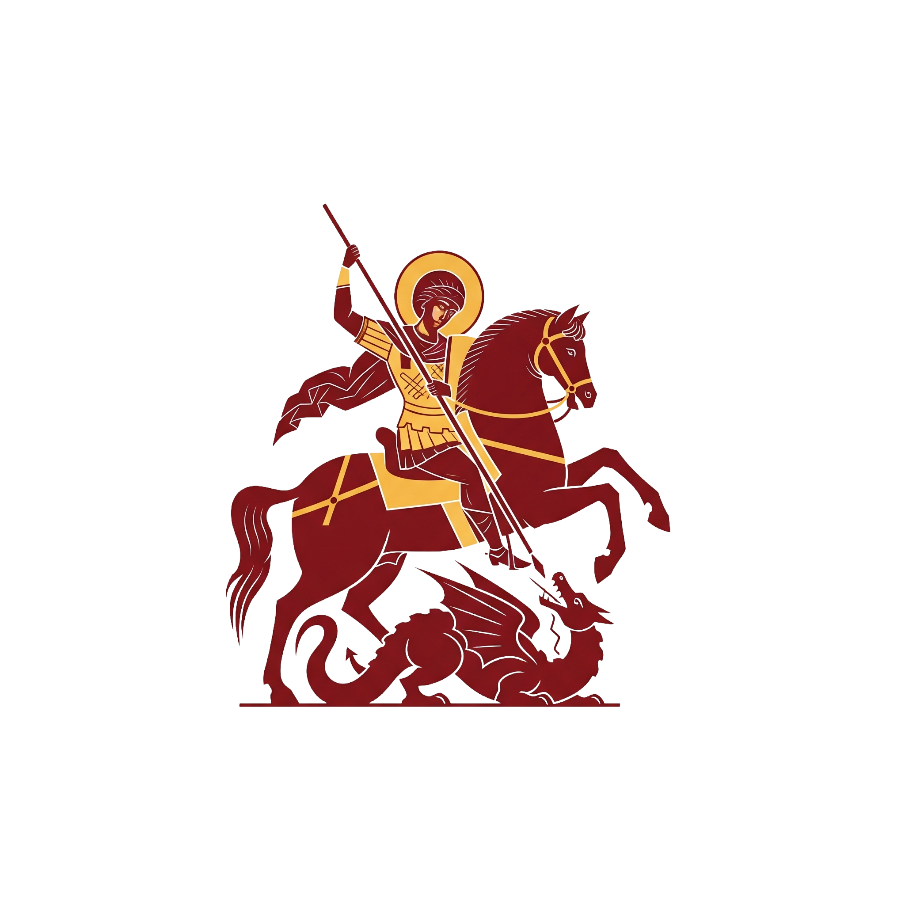
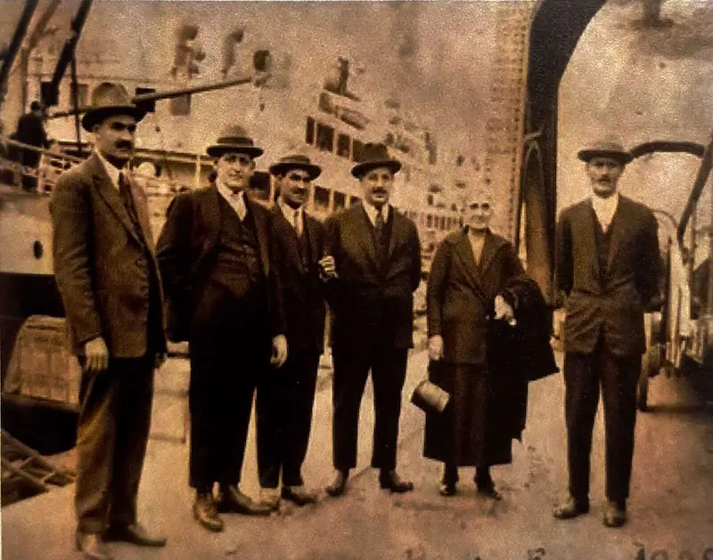
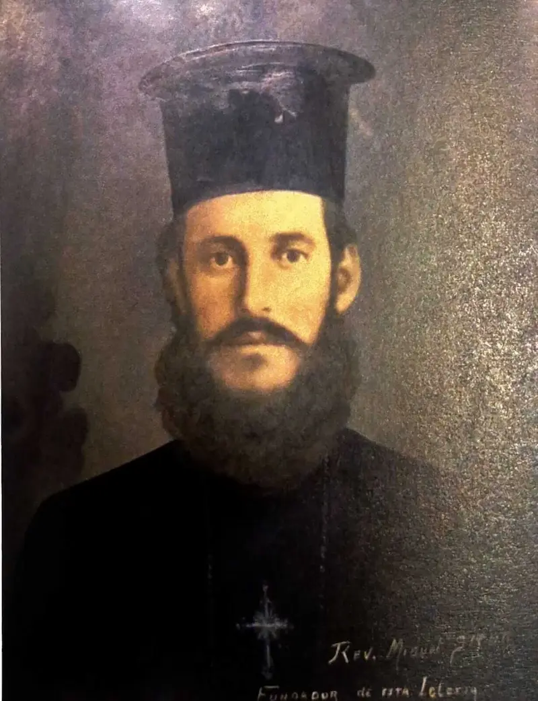
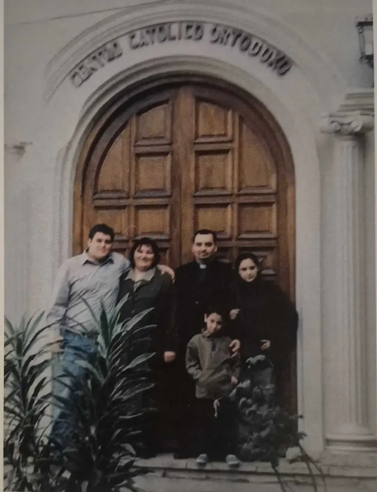
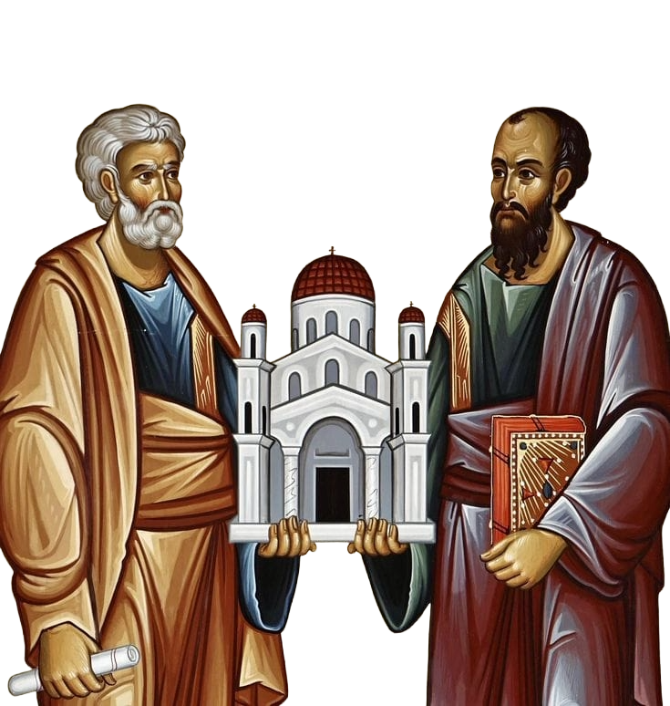
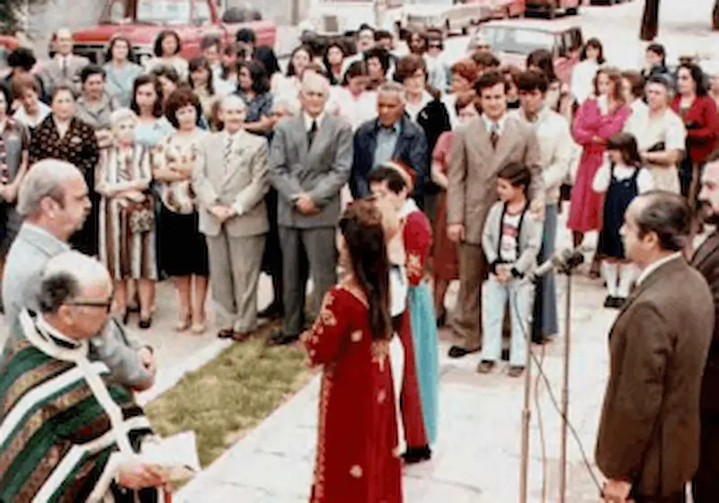
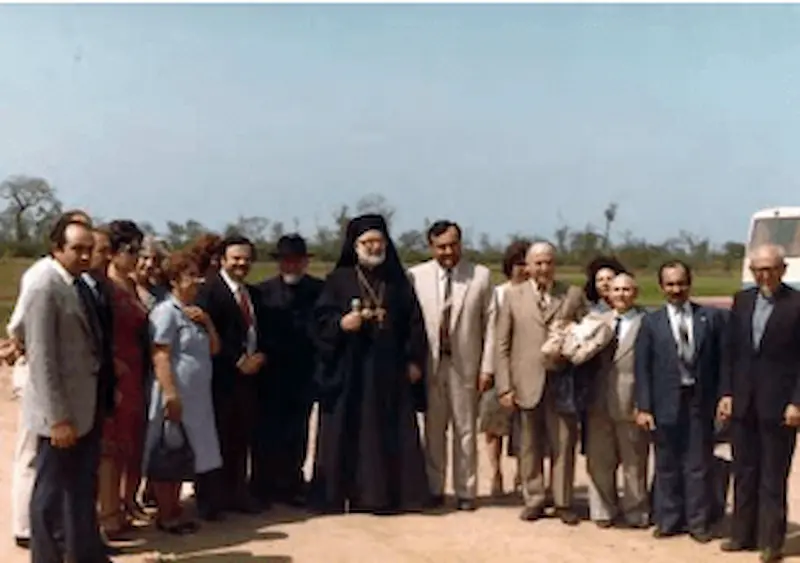
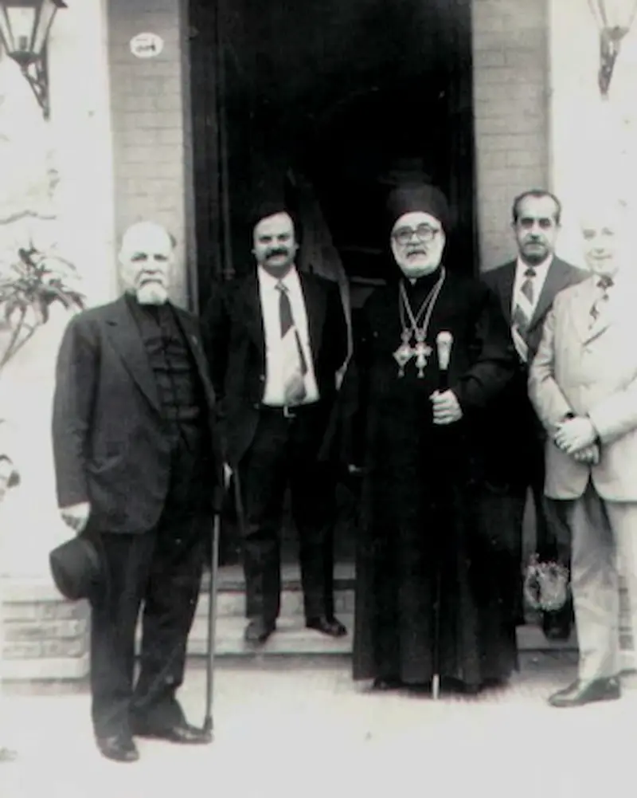

<!DOCTYPE html>
<html lang="es">
<head>
    <script async src="https://www.googletagmanager.com/gtag/js?id=G-MX95482GY3"></script>
    <script>
      window.dataLayer = window.dataLayer || [];
      function gtag(){dataLayer.push(arguments);}
      gtag('js', new Date());
      gtag('config', 'G-MX95482GY3');
    </script>
    <meta charset="UTF-8">
    <meta name="google-site-verification" content="rMSO51EGmti5fbXD8NUfNGWgDvMvj-G5rQKAHpqWPZc" />
    <meta charset="UTF-8">
    <meta name="viewport" content="width=device-width, initial-scale=1.0">
    <title>Parroquia San Jorge - Salta</title>
    <meta name="description" content="Sitio oficial de la Parroquia San Jorge en Salta. Única Iglesia Ortodoxa del Patriarcado de Antioquía en la provincia. Horarios de Divina Liturgia, ubicación y vida parroquial.">
    <meta name="keywords" content="Iglesia Ortodoxa Salta, Parroquia San Jorge, Patriarcado de Antioquía, Misa Ortodoxa, Cristianismo Ortodoxo Argentina, Liturgia Divina, Salta">
    <meta name="robots" content="index, follow">
    <meta property="og:title" content="Parroquia San Jorge - Iglesia Ortodoxa en Salta">
    <meta property="og:description" content="Vení y conocé la fe de los Apóstoles. Horarios de culto y actividades en Salta Capital.">
    <meta property="og:image" content="https://www.iglesiaortodoxasalta.com.ar/Img/logo.png">
    <link rel="icon" type="image/png" sizes="32x32" href="Img/favicon.png">
    <link rel="icon" type="image/png" sizes="16x16" href="Img/favicon.png">

    <link rel="icon" type="image/png" sizes="192x192" href="Img/favicon.png">
    
    <link rel="apple-touch-icon" sizes="180x180" href="Img/favicon.png">    
    <!-- React & ReactDOM -->
    <script crossorigin src="https://unpkg.com/react@18/umd/react.development.js"></script>
    <script crossorigin src="https://unpkg.com/react-dom@18/umd/react-dom.development.js"></script>
    
    <!-- Babel for JSX -->
    <script src="https://unpkg.com/@babel/standalone/babel.min.js"></script>
    
    <!-- Tailwind CSS -->
    <script src="https://cdn.tailwindcss.com"></script>
    
    <!-- Google Fonts: Cinzel (Títulos) & Lato (Cuerpo) -->
    <link href="https://fonts.googleapis.com/css2?family=Cinzel:wght@400;700&family=Lato:wght@300;400;700&family=Merriweather:wght@300;400;700&display=swap" rel="stylesheet">
    <script src="datosSantoral.js"></script>
    <style>
        /* Paleta de Colores Bizantina */
        :root {
            --byz-red: #761C1C;
            --byz-gold: #C5A059;
            --byz-black: #1A1A1A;
            --paper: #F9F7F2;
        }
        body {
            font-family: 'Lato', sans-serif;
            background-color: var(--paper);
            color: var(--byz-black);
        }
        h1, h2, h3, .font-serif {
            font-family: 'Cinzel', serif;
        }
        .text-gold { color: var(--byz-gold); }
        .bg-red-ortho { background-color: var(--byz-red); }
        .border-gold { border-color: var(--byz-gold); }
        
        /* Efecto Parallax suave para el Hero */
        .hero-bg {
            background-image: linear-gradient(rgba(0, 0, 0, 0.6), rgba(0, 0, 0, 0.6)), url('https://images.unsplash.com/photo-1548625361-ec8f12242542?ixlib=rb-1.2.1&auto=format&fit=crop&w=1920&q=80'); 
            background-attachment: fixed;
            background-position: center;
            background-repeat: no-repeat;
            background-size: cover;
        }
        
        /* Animación para el Modal */
        @keyframes fadeIn {
            from { opacity: 0; transform: scale(0.95); }
            to { opacity: 1; transform: scale(1); }
        }
        .animate-modal {
            animation: fadeIn 0.2s ease-out forwards;
        }
	/* ESTILOS PARA LA HISTORIA */
	.font-reading { font-family: 'Merriweather', serif; }

	/* Scrollbar elegante */
	::-webkit-scrollbar { width: 8px; }
	::-webkit-scrollbar-track { background: #F9F7F2; }
	::-webkit-scrollbar-thumb { background-color: #C5A059; border-radius: 4px; }
    </style>
</head>
<body>
    <div id="root"></div>

    <script type="text/babel">
        const { useState, useEffect } = React;


        // --- ICONOS SVG ---
        const IconBase = ({ children, size = 24, className = "" }) => (
            <svg 
                xmlns="http://www.w3.org/2000/svg" 
                width={size} 
                height={size} 
                viewBox="0 0 24 24" 
                fill="none" 
                stroke="currentColor" 
                strokeWidth="2" 
                strokeLinecap="round" 
                strokeLinejoin="round" 
                className={className}
            >
                {children}
            </svg>
        );

        const MapPin = (props) => ( <IconBase {...props}> <path d="M21 10c0 7-9 13-9 13s-9-6-9-13a9 9 0 0 1 18 0z"></path> <circle cx="12" cy="10" r="3"></circle> </IconBase> );
        const Calendar = (props) => ( <IconBase {...props}> <rect x="3" y="4" width="18" height="18" rx="2" ry="2"></rect> <line x1="16" y1="2" x2="16" y2="6"></line> <line x1="8" y1="2" x2="8" y2="6"></line> <line x1="3" y1="10" x2="21" y2="10"></line> </IconBase> );
        const BookOpen = (props) => ( <IconBase {...props}> <path d="M2 3h6a4 4 0 0 1 4 4v14a3 3 0 0 0-3-3H2z"></path> <path d="M22 3h-6a4 4 0 0 0-4 4v14a3 3 0 0 1 3-3h7z"></path> </IconBase> );
        const Menu = (props) => ( <IconBase {...props}> <line x1="3" y1="12" x2="21" y2="12"></line> <line x1="3" y1="6" x2="21" y2="6"></line> <line x1="3" y1="18" x2="21" y2="18"></line> </IconBase> );
        const X = (props) => ( <IconBase {...props}> <line x1="18" y1="6" x2="6" y2="18"></line> <line x1="6" y1="6" x2="18" y2="18"></line> </IconBase> );
        const Facebook = (props) => ( <IconBase {...props}> <path d="M18 2h-3a5 5 0 0 0-5 5v3H7v4h3v8h4v-8h3l1-4h-4V7a1 1 0 0 1 1-1h3z"></path> </IconBase> );
        const ChevronRight = (props) => ( <IconBase {...props}> <polyline points="9 18 15 12 9 6"></polyline> </IconBase> );
	const ChevronDown = (props) => ( <IconBase {...props}> <polyline points="6 9 12 15 18 9"></polyline> </IconBase> );
        const Clock = (props) => ( <IconBase {...props}> <circle cx="12" cy="12" r="10"></circle> <polyline points="12 6 12 12 16 14"></polyline> </IconBase> );
        const Info = (props) => ( <IconBase {...props}> <circle cx="12" cy="12" r="10"></circle> <line x1="12" y1="16" x2="12" y2="12"></line> <line x1="12" y1="8" x2="12.01" y2="8"></line> </IconBase> );
        const Phone = (props) => ( <IconBase {...props}> <path d="M22 16.92v3a2 2 0 0 1-2.18 2 19.79 19.79 0 0 1-8.63-3.07 19.5 19.5 0 0 1-6-6 19.79 19.79 0 0 1-3.07-8.67A2 2 0 0 1 4.11 2h3a2 2 0 0 1 2 1.72 12.84 12.84 0 0 0 .7 2.81 2 2 0 0 1-.45 2.11L8.09 9.91a16 16 0 0 0 6 6l1.27-1.27a2 2 0 0 1 2.11-.45 12.84 12.84 0 0 0 2.81.7A2 2 0 0 1 22 16.92z"></path> </IconBase> );
        const Users = (props) => ( <IconBase {...props}> <path d="M17 21v-2a4 4 0 0 0-4-4H5a4 4 0 0 0-4 4v2"></path> <circle cx="9" cy="7" r="4"></circle> <path d="M23 21v-2a4 4 0 0 0-3-3.87"></path> <path d="M16 3.13a4 4 0 0 1 0 7.75"></path> </IconBase> );
        const FileText = (props) => ( <IconBase {...props}> <path d="M14 2H6a2 2 0 0 0-2 2v16a2 2 0 0 0 2 2h12a2 2 0 0 0 2-2V8z"></path> <polyline points="14 2 14 8 20 8"></polyline> <line x1="16" y1="13" x2="8" y2="13"></line> <line x1="16" y1="17" x2="8" y2="17"></line> <polyline points="10 9 9 9 8 9"></polyline> </IconBase> );
        const Download = (props) => ( <IconBase {...props}> <path d="M21 15v4a2 2 0 0 1-2 2H5a2 2 0 0 1-2-2v-4"></path> <polyline points="7 10 12 15 17 10"></polyline> <line x1="12" y1="15" x2="12" y2="3"></line> </IconBase> );
        const Camera = (props) => ( <IconBase {...props}> <path d="M23 19a2 2 0 0 1-2 2H3a2 2 0 0 1-2-2V8a2 2 0 0 1 2-2h4l2-3h6l2 3h4a2 2 0 0 1 2 2z"></path> <circle cx="12" cy="13" r="4"></circle> </IconBase> );
        const Cross = (props) => ( <IconBase {...props}> <path d="M12 2v20M5 8h14" /> </IconBase> );
        const Bell = (props) => ( <IconBase {...props}> <path d="M18 8A6 6 0 0 0 6 8c0 7-3 9-3 9h18s-3-2-3-9"></path> <path d="M13.73 21a2 2 0 0 1-3.46 0"></path> </IconBase> );

        // --- COMPONENTES ---

        // Modal Genérico Mejorado
        const InfoModal = ({ isOpen, onClose, title, children, maxWidth = "max-w-2xl" }) => {
            if (!isOpen) return null;
            return (
                <div className="fixed inset-0 z-50 flex items-center justify-center p-4 bg-black bg-opacity-80 backdrop-blur-sm transition-opacity" onClick={onClose}>
                    <div className={`bg-[#F9F7F2] rounded-lg ${maxWidth} w-full max-h-[85vh] overflow-y-auto shadow-2xl border-2 border-[#C5A059] animate-modal`} onClick={e => e.stopPropagation()}>
                        <div className="sticky top-0 bg-[#F9F7F2] p-4 border-b border-[#C5A059] flex justify-between items-center z-10">
                            <h2 className="text-2xl font-serif font-bold text-[#1A1A1A]">{title}</h2>
                            <button onClick={onClose} className="text-gray-500 hover:text-[#761C1C] transition-colors p-1 rounded hover:bg-gray-200">
                                <X size={28} />
                            </button>
                        </div>
                        <div className="p-6 text-gray-800 leading-relaxed space-y-4 font-light text-lg whitespace-pre-line">
                            {children}
                        </div>
                        <div className="p-4 border-t border-gray-200 bg-gray-50 text-right">
                            <button onClick={onClose} className="bg-[#1A1A1A] text-white px-4 py-2 rounded hover:bg-[#761C1C] transition-colors font-bold text-sm">
                                CERRAR
                            </button>
                        </div>
                    </div>
                </div>
            );
        };

        // Navegación (Desplegable y Táctica)
// Navegación (Con Logo Institucional)
// --- NUEVO NAVBAR INTELIGENTE (REEMPLAZAR EL ANTERIOR) ---
        const Navbar = ({ currentView, setView }) => {
            const [isOpen, setIsOpen] = useState(false);
            const [scrolled, setScrolled] = useState(false);
            const [dropdownOpen, setDropdownOpen] = useState(false); 

            useEffect(() => {
                const handleScroll = () => setScrolled(window.scrollY > 50);
                window.addEventListener('scroll', handleScroll);
                return () => window.removeEventListener('scroll', handleScroll);
            }, []);

            // AQUÍ DEFINIMOS LOS MENÚS DISTINTOS QUE PEDISTE
            const menus = {
                salta: [
                    { name: 'Inicio', href: '#inicio' },
                    { name: 'Horarios', href: '#horarios' },
                    { name: 'Espiritualidad', children: [{ name: 'Nuestra Fe', href: '#fe' }, { name: 'Santo Patrono', href: '#patrono' }, { name: 'Santoral', href: '#santoral' }, { name: 'Biblioteca', href: '#biblioteca' }] },
                    { name: 'Vida Parroquial', children: [{ name: 'Actividades', href: '#actividades' }, { name: 'Galería', href: '#galeria' }] },
                    { name: 'Ubicación', href: '#ubicacion' }
                ],
                tartagal: [
                    { name: 'Inicio', href: '#inicio' },
                    { name: 'Novedades', href: '#noticias' },
                    { name: 'Ubicación', href: '#ubicacion' }
                ]
            };

            const switchView = (place) => {
                setView(place);
                setDropdownOpen(false);
                setIsOpen(false);
            };

            const currentMenu = menus[currentView];

            return (
                <nav className={`fixed w-full z-50 transition-all duration-300 ${scrolled ? 'bg-[#1A1A1A] shadow-lg py-2' : 'bg-gradient-to-b from-black/80 to-transparent py-4'}`}>
                    <div className="container mx-auto px-4 flex justify-between items-center relative">
                        
                        {/* IDENTIDAD + SELECTOR */}
                        <div className="flex items-center space-x-3 text-white group relative z-50">
                            <a href="#inicio" className="flex-shrink-0"> {e.target.style.display='none';}} 
/></a>
                            <div className="flex flex-col relative">
                                <button onClick={() => setDropdownOpen(!dropdownOpen)} className="flex items-center gap-1 text-xl md:text-2xl font-serif font-bold text-[#C5A059] hover:text-white transition-colors focus:outline-none">
                                    <span>{currentView === 'salta' ? 'San Jorge' : 'San Elías'}</span>
                                    <ChevronDown size={18} className={`transform transition-transform ${dropdownOpen ? 'rotate-180' : ''}`} />
                                </button>
                                <span className="hidden md:block text-[10px] uppercase tracking-[0.2em] text-gray-300">
                                    {currentView === 'salta' ? 'Patriarcado de Antioquía | Salta' : 'Patriarcado de Antioquía | Tartagal'}
                                </span>
                                
                                {/* Menú Desplegable de Sede */}
                                {dropdownOpen && (
                                    <div className="absolute top-full left-0 mt-2 w-56 bg-[#1A1A1A] border border-[#C5A059] shadow-2xl rounded-md overflow-hidden animate-modal">
                                        <button onClick={() => switchView('salta')} className="w-full text-left px-4 py-3 hover:bg-[#252525] text-white flex justify-between items-center border-b border-gray-800">
                                            <span>Parroquia San Jorge</span>{currentView === 'Salta' && <span className="text-[#C5A059] text-xs">●</span>}
                                        </button>
                                        <button onClick={() => switchView('tartagal')} className="w-full text-left px-4 py-3 hover:bg-[#252525] text-white flex justify-between items-center">
                                            <span>Parroquia San Elías</span>{currentView === 'Tartagal' && <span className="text-[#C5A059] text-xs">●</span>}
                                        </button>
                                    </div>
                                )}
                            </div>
                        </div>

                        {/* MENÚ DE SECCIONES (PC) */}
                        <div className="hidden md:flex space-x-6 items-center">
                            {currentMenu.map((item) => (
                                item.children ? (
                                    <div key={item.name} className="relative group">
                                        <button className="text-white hover:text-[#C5A059] transition-colors uppercase text-sm font-bold tracking-wide flex items-center gap-1 py-4">{item.name} <ChevronRight size={14} className="rotate-90" /></button>
                                        <div className="absolute left-0 mt-0 w-48 bg-[#1A1A1A] border-t-2 border-[#C5A059] shadow-xl opacity-0 invisible group-hover:opacity-100 group-hover:visible transition-all duration-300 transform translate-y-2 group-hover:translate-y-0">
                                            {item.children.map(child => (<a key={child.name} href={child.href} className="block px-4 py-3 text-white hover:bg-[#252525] hover:text-[#C5A059] text-sm border-b border-gray-800 last:border-0 font-serif">{child.name}</a>))}
                                        </div>
                                    </div>
                                ) : (<a key={item.name} href={item.href} className="text-white hover:text-[#C5A059] transition-colors uppercase text-sm font-bold tracking-wide">{item.name}</a>)
                            ))}
                        </div>

                        {/* BOTÓN MÓVIL */}
                        <button onClick={() => setIsOpen(!isOpen)} className="md:hidden text-white">{isOpen ? <X size={28} /> : <Menu size={28} />}</button>
                    </div>

                    {/* MENÚ MÓVIL */}
                    {isOpen && (
                        <div className="md:hidden bg-[#1A1A1A] border-t border-gray-800 absolute w-full max-h-[80vh] overflow-y-auto shadow-2xl">
                            <div className="p-4 border-b border-gray-700 bg-[#252525] text-center">
                                <p className="text-[#C5A059] text-xs uppercase tracking-widest mb-2">Cambiar Iglesia</p>
                                <div className="flex justify-center gap-2">
                                    <button onClick={() => switchView('salta')} className={`px-3 py-1 rounded text-sm ${currentView === 'salta' ? 'bg-[#C5A059] text-black' : 'bg-black text-white border border-gray-600'}`}>San Jorge</button>
                                    <button onClick={() => switchView('tartagal')} className={`px-3 py-1 rounded text-sm ${currentView === 'tartagal' ? 'bg-[#C5A059] text-black' : 'bg-black text-white border border-gray-600'}`}>San Elías</button>
                                </div>
                            </div>
                            <div className="flex flex-col p-4 space-y-2">
                                {currentMenu.map((item) => (
                                    item.children ? (
                                        <div key={item.name} className="border-b border-gray-800 pb-2">
                                            <div className="text-[#C5A059] font-bold uppercase text-xs mb-2 mt-2 tracking-widest">{item.name}</div>
                                            <div className="pl-4 flex flex-col space-y-3">
                                                {item.children.map(child => (<a key={child.name} href={child.href} onClick={() => setIsOpen(false)} className="text-white hover:text-[#C5A059] text-lg font-serif">{child.name}</a>))}
                                            </div>
                                        </div>
                                    ) : (<a key={item.name} href={item.href} onClick={() => setIsOpen(false)} className="text-white hover:text-[#C5A059] text-lg font-serif py-2 border-b border-gray-800">{item.name}</a>)
                                ))}
                            </div>
                        </div>
                    )}
                </nav>
            );
        };

        // Hero
// Hero (Actualizado con Logo Institucional)
        const Hero = () => (
            <section id="inicio" className="hero-bg min-h-screen flex flex-col items-center justify-center text-center px-4 py-20">
                {/* APERTURA DEL CONTENEDOR PRINCIPAL */}
                <div className="max-w-4xl animate-fade-in-up flex flex-col items-center">
                    
                    {/* 1. LOGO (Con su contenedor de margen restaurado) */}
                    <div className="mb-6">
                         {e.target.style.display='none';}}
                        />
                    </div>
                    {/* (Aquí borré el </div> que sobraba y cortaba el código) */}

                    {/* 2. TÍTULO */}
                    <h1 className="text-4xl md:text-6xl font-bold text-white mb-2 font-serif tracking-tight drop-shadow-lg">
                        Parroquia San Jorge
                        <span className="block mt-2 text-2xl md:text-4xl">
                            Salta
                        </span>
                    </h1>

                    {/* 3. SUBTÍTULOS */}
                    <p className="text-xl md:text-2xl text-[#C5A059] font-serif italic mb-8 drop-shadow-md">
                        Patriarcado de Antioquía
                    </p>

                    {/* 4. RETRATO DEL ARZOBISPO */}
                    <div className="flex flex-col items-center mb-10 animate-fade bg-[#1A1A1A]/60 backdrop-blur-sm p-6 rounded-xl border border-[#C5A059] shadow-2xl max-w-sm w-full">
                        <div className="relative mb-4 group">
                            <div className="absolute -inset-1 bg-gradient-to-b from-[#C5A059] to-[#761C1C] rounded-lg opacity-75 blur-sm"></div>
                             {e.target.closest('div').style.display='none';}} 
                            />
                        </div>
                        <div className="text-center">
                            <p className="text-[#C5A059] font-serif text-xs font-bold uppercase tracking-[0.15em] mb-2 border-b border-[#C5A059]/30 pb-1 inline-block">
                                Nuestro Arzobispo
                            </p>
                            <h3 className="text-white font-serif text-lg md:text-xl font-bold leading-tight mb-1">
                                S.E.R. Monseñor Santiago El Khoury
                            </h3>
                             <p className="text-gray-300 text-xs md:text-sm font-light italic">
                                Metropolitano de Buenos Aires y toda Argentina
                            </p>
                        </div>
                    </div>

                    {/* 5. BOTÓN DE ACCIÓN */}
		    <div className="flex flex-col gap-4 mt-2">
                        <a 
                            href="Documentos/iglesias.pdf" 
                            target="_blank" 
                            rel="noopener noreferrer"
                            className="inline-block bg-[#761C1C] hover:bg-[#5a1515] text-white font-bold py-3 px-10 rounded border border-[#C5A059] transition-all transform hover:scale-105 uppercase tracking-wider text-sm shadow-lg"
                        >
                            Parroquias de la Arquidiócesis
                        </a>
                        
                        <a href="#horarios" className="text-[#C5A059] text-xs hover:text-white underline font-serif">
                            (Ver Horarios)
                        </a>
                    </div>

                </div> {/* CIERRE CORRECTO DEL CONTENEDOR */}
            </section>
        );
// SECCIÓN HISTORIA (Diseño Zig-Zag Táctico)
        const ParishHistory = () => {
            const [showFullHistory, setShowFullHistory] = useState(false);

            return (
                <section id="historia" className="py-20 bg-[#1A1A1A] text-white border-b-8 border-[#C5A059]">
                    <div className="container mx-auto px-4 text-center">
                        <div className="flex justify-center mb-6 text-[#C5A059]">
                            <BookOpen size={48} />
                        </div>

                        <h2 className="text-3xl md:text-4xl font-serif font-bold text-[#C5A059] mb-8">
                            Un Siglo de Fe
                        </h2>

                        <p className="text-lg md:text-xl font-light italic leading-relaxed max-w-4xl mx-auto mb-10 text-gray-300">
                            "Huyendo de la opresión otomana y armados únicamente con la Tradición Apostólica, los inmigrantes ortodoxos llegaron a Salta con una misión clara: preservar la Fe de sus padres."
                        </p>

                        <button 
                            onClick={() => setShowFullHistory(true)}
                            className="inline-block bg-transparent hover:bg-[#C5A059] text-[#C5A059] hover:text-[#1A1A1A] font-bold py-3 px-8 rounded border-2 border-[#C5A059] transition-all uppercase tracking-wider"
                        >
                            Leer Historia Completa
                        </button>
                    </div>

                    {/* OVERLAY PANTALLA COMPLETA */}
                    {showFullHistory && (
                        <div className="fixed inset-0 z-[100] bg-[#F9F7F2] overflow-y-auto animate-modal">
                            
                            {/* Barra Superior */}
                            <div className="bg-[#1A1A1A] text-white py-4 px-6 flex justify-between items-center sticky top-0 shadow-md z-50 border-b border-[#C5A059]">
                                <span className="font-serif font-bold text-lg text-[#C5A059]">Historia Parroquial</span>
                                <button onClick={() => setShowFullHistory(false)} className="flex items-center text-gray-300 hover:text-white transition-colors uppercase font-bold text-sm">
                                    <span className="mr-2">Cerrar</span> <X size={24} />
                                </button>
                            </div>

                            {/* Contenido Zig-Zag */}
                            <div className="max-w-6xl mx-auto p-6 md:p-12 pb-24 text-[#1A1A1A]">
                                
                                <div className="text-center mb-16">
                                    <h1 className="text-3xl md:text-5xl font-serif font-bold text-[#761C1C] mb-4">Un Siglo de Fe Ortodoxa en Salta</h1>
                                    <div className="w-24 h-1 bg-[#C5A059] mx-auto"></div>
                                </div>

                                {/* PUNTO 1: FOTO IZQUIERDA - TEXTO DERECHA */}
                                <div className="flex flex-col lg:flex-row gap-12 items-center mb-24">
<div className="lg:w-1/2 relative group">
                                        <div className="absolute top-4 -left-4 w-full h-full border-2 border-[#C5A059] z-0"></div>
                                         {e.target.src = 'https://upload.wikimedia.org/wikipedia/commons/thumb/c/c3/Saint_George_icon_from_Georgia.jpg/440px-Saint_George_icon_from_Georgia.jpg'}} 
                                        />
                                        <p className="relative z-10 mt-3 text-left text-sm italic text-gray-600 font-serif">
                                            Inmigrantes radicados esperando a familiares en el puerto de Buenos Aires
                                        </p>
                                    </div>                                    <div className="lg:w-1/2 font-reading">
                                        <h3 className="text-2xl font-bold text-[#761C1C] font-serif mb-4 flex items-center">
                                            <span className="bg-[#C5A059] text-white rounded-full w-8 h-8 flex items-center justify-center text-sm mr-3">1</span>
                                            El Éxodo y la Esperanza
                                        </h3>
                                        <p className="text-lg leading-relaxed text-gray-800 text-justify">
                                            La historia de nuestra comunidad comienza con el doloroso éxodo de cristianos árabes (sirios y libaneses) que huían de la opresión, el reclutamiento forzoso y la persecución religiosa del Imperio Otomano. Buscando paz y libertad de culto, llegaron al norte argentino trayendo consigo su mayor tesoro: la Fe Ortodoxa. A pesar de las barreras del idioma y la cultura, lograron una integración plena, transformando su angustia en esperanza y trabajo.
                                        </p>
                                    </div>
                                </div>

                                {/* PUNTO 2: TEXTO IZQUIERDA - FOTO DERECHA (flex-row-reverse) */}
                                <div className="flex flex-col lg:flex-row-reverse gap-12 items-center mb-24">
<div className="lg:w-1/2 relative group">
                                        <div className="absolute top-4 -right-4 w-full h-full border-2 border-[#1A1A1A] z-0"></div>
                                         {e.target.src = 'https://upload.wikimedia.org/wikipedia/commons/thumb/6/6b/Eastern_Orthodox_cross.svg/1200px-Eastern_Orthodox_cross.svg.png'}} 
                                        />
                                        <p className="relative z-10 mt-3 text-center text-sm italic text-gray-600 font-serif">
                                            Reverendo Padre Abraham Isa.
                                        </p>
                                    </div>                                    <div className="lg:w-1/2 font-reading">
                                        <h3 className="text-2xl font-bold text-[#761C1C] font-serif mb-4 flex items-center">
                                            <span className="bg-[#C5A059] text-white rounded-full w-8 h-8 flex items-center justify-center text-sm mr-3">2</span>
                                            La Fundación de la Misión
                                        </h3>
                                        <p className="text-lg leading-relaxed text-gray-800 text-justify">
                                            La presencia oficial de la Iglesia se consolida en 1914 con la llegada del Rvdo. Padre Abraham Isa, primer párroco que ofició servicios litúrgicos itinerantes en Salta, Jujuy y Santiago del Estero. Durante esta etapa, sin templo propio, la Divina Liturgia se celebraba en hogares y en la sede de la Unión Sirio-Libanesa (actual Museo Casa de Hernández).
                                        </p>
                                    </div>
                                </div>

                                {/* PUNTO 3: FOTO IZQUIERDA - TEXTO DERECHA */}
                                <div className="flex flex-col lg:flex-row gap-12 items-center mb-24">
<div className="lg:w-1/2 relative group">
                                        <div className="absolute top-4 -left-4 w-full h-full border-2 border-[#C5A059] z-0"></div>
                                         {e.target.src = 'https://upload.wikimedia.org/wikipedia/commons/thumb/c/c3/Saint_George_icon_from_Georgia.jpg/440px-Saint_George_icon_from_Georgia.jpg'}} 
                                        />
                                        <p className="relative z-10 mt-3 text-center text-sm italic text-gray-600 font-serif">
                                            R.P. Miguel Srur fundador de la Sociedad Pro Templo Ortodoxo.
                                        </p>
                                    </div>                                    <div className="lg:w-1/2 font-reading">
                                        <h3 className="text-2xl font-bold text-[#761C1C] font-serif mb-4 flex items-center">
                                            <span className="bg-[#C5A059] text-white rounded-full w-8 h-8 flex items-center justify-center text-sm mr-3">3</span>
                                            La Organización Institucional
                                        </h3>
                                        <p className="text-lg leading-relaxed text-gray-800 text-justify">
                                            Bajo la guía pastoral del Rvdo. Padre Miguel Srur, el 30 de enero de 1935 se fundó la "Sociedad Pro Templo Ortodoxo". Esta institución, sostenida por el esfuerzo mancomunado de las familias fundadoras (Lávaque, Dagum, Salim, entre otras), adquirió en 1937 el terreno de la calle Carlos Pellegrini 250. El 14 de agosto de 1938 se colocó la Piedra Fundamental con la bendición de Mons. Ignacio Aburrus.
                                        </p>
                                    </div>
                                </div>

                                {/* PUNTO 4: TEXTO IZQUIERDA - FOTO DERECHA */}
                                <div className="flex flex-col lg:flex-row-reverse gap-12 items-center mb-24">
<div className="lg:w-1/2 relative group">
                                        <div className="absolute top-4 -right-4 w-full h-full border-2 border-[#1A1A1A] z-0"></div>
                                         {e.target.src = 'https://upload.wikimedia.org/wikipedia/commons/thumb/6/6b/Eastern_Orthodox_cross.svg/1200px-Eastern_Orthodox_cross.svg.png'}} 
                                        />
                                        <p className="relative z-10 mt-3 text-center text-sm italic text-gray-600 font-serif">
                                            Rdo. Padre Efram Kasuf en su escritorio, año 1965.
                                        </p>
                                    </div>                                    <div className="lg:w-1/2 font-reading">
                                        <h3 className="text-2xl font-bold text-[#761C1C] font-serif mb-4 flex items-center">
                                            <span className="bg-[#C5A059] text-white rounded-full w-8 h-8 flex items-center justify-center text-sm mr-3">4</span>
                                            La Construcción del Templo
                                        </h3>
                                        <p className="text-lg leading-relaxed text-gray-800 text-justify">
                                            Esta etapa está marcada por la figura del Archimandrita Efram Kasuf (de eterna memoria), quien arribó en 1950 y dedicó más de 50 años a la comunidad. Su liderazgo fue decisivo para la edificación del Templo San Jorge, inaugurado solemnemente el 7 de julio de 1957 por el Metropolitano Meletios Swaity. El Padre Efram consolidó la vida parroquial, impulsó la juventud (U.J.O.) y extendió la misión al interior.
                                        </p>
                                    </div>
                                </div>

                                {/* PUNTO 5: FOTO IZQUIERDA - TEXTO DERECHA */}
                                <div className="flex flex-col lg:flex-row gap-12 items-center mb-16">
<div className="lg:w-1/2 relative group">
                                        <div className="absolute top-4 -left-4 w-full h-full border-2 border-[#C5A059] z-0"></div>
                                         {e.target.src = 'https://images.unsplash.com/photo-1544492341-2a6237742d48?auto=format&fit=crop&w=600&q=80'}} 
                                        />
                                        <p className="relative z-10 mt-3 text-center text-sm italic text-gray-600 font-serif">
                                            La familia del R.P. Adolfo Barrionuevo.
                                        </p>
                                    </div>                                    <div className="lg:w-1/2 font-reading">
                                        <h3 className="text-2xl font-bold text-[#761C1C] font-serif mb-4 flex items-center">
                                            <span className="bg-[#C5A059] text-white rounded-full w-8 h-8 flex items-center justify-center text-sm mr-3">5</span>
                                            Renovación en el Tercer Milenio
                                        </h3>
                                        <p className="text-lg leading-relaxed text-gray-800 text-justify">
                                            Tras el fallecimiento del Archimandrita Kasuf, el Arzobispo Kirilos Doumat designó al Rvdo. Padre Adolfo María Barrionuevo como párroco. Su llegada en enero de 2004, junto a su familia, marcó el inicio de una nueva etapa pastoral, caracterizada por la continuidad en la tradición y la revitalización de la comunidad como una gran familia espiritual.
                                        </p>
                                    </div>
                                </div>

                                {/* Botón de Descarga al Final */}
                                <div className="text-center pt-12 border-t border-gray-300">
                                    <a href="Documentos/historia.pdf" target="_blank" className="inline-flex items-center gap-2 bg-[#761C1C] text-white px-8 py-4 rounded hover:bg-[#1A1A1A] transition-colors font-bold uppercase tracking-wide shadow-lg">
                                        <Download size={24} />
                                        Descargar Historia Completa
                                    </a>
                                </div>

                            </div>
                        </div>
                    )}
                </section>
            );
        };
        // Horarios
        const Schedule = () => {
            const services = [
                { day: "Miércoles", time: "20:00 Hs", name: "Divina Liturgia Semanal", desc: "" },
                { day: "Domingos", time: "09:00 Hs", name: "Matutinos", desc: "" },
                { day: "Domingos", time: "10:00 Hs", name: "Divina Liturgia Dominical", desc: "" },
            ];

            return (
                <section id="horarios" className="py-20 bg-white">
                    <div className="container mx-auto px-4">
                        <div className="text-center mb-12">
                            <h2 className="text-3xl md:text-4xl font-bold text-[#761C1C] mb-4">Horarios de Servicios</h2>
                            <div className="w-24 h-1 bg-[#C5A059] mx-auto"></div>
                            <p className="mt-4 text-gray-600">Venid y ved.</p>
                        </div>
                        
                        <div className="grid md:grid-cols-3 gap-8 max-w-5xl mx-auto">
                            {services.map((svc, idx) => (
                                <div key={idx} className="bg-[#F9F7F2] p-8 border-t-4 border-[#761C1C] shadow-md hover:shadow-xl transition-shadow text-center group">
                                    <Clock className="w-10 h-10 mx-auto text-[#C5A059] mb-4 group-hover:scale-110 transition-transform" />
                                    <h3 className="text-xl font-bold text-[#1A1A1A] mb-2">{svc.day}</h3>
                                    <div className="text-2xl font-serif text-[#761C1C] font-bold mb-2">{svc.time}</div>
                                    <h4 className="text-lg font-bold text-gray-800 mb-2">{svc.name}</h4>
                                    {svc.desc && <p className="text-sm text-gray-600">{svc.desc}</p>}
                                </div>
                            ))}
                        </div>

                        <div className="mt-12 text-center bg-[#1A1A1A] text-white p-6 rounded max-w-2xl mx-auto border border-[#C5A059]">
                            <Info className="inline-block w-6 h-6 text-[#C5A059] mb-2" />
                            <p className="font-light">
                                <span className="font-bold text-[#C5A059]">Nota Importante:</span> La Santa Comunión se ofrece únicamente a fieles ortodoxos bautizados y preparados. Los visitantes pueden recibir el <em>Antidoron</em> (pan bendito) al término de la Divina Liturgia.
                            </p>
                        </div>
                    </div>
                </section>
            );
        };
// --- REGLAS, ETIQUETA Y CATEQUESIS (COMPONENTE COMPLETO) ---
        const TempleEtiquette = () => {
            const [showGuide, setShowGuide] = useState(false); // Estado para el modal de catequesis

            const rules = [
                { 
                    title: "Vestimenta Decorosa", 
                    text: "Se exige pudor y respeto. Mujeres: prohibido el uso de shorts, faldas sobre la rodilla, escotes, hombros o espalda descubiertos, transparencias y ojotas. Hombres: prohibido el uso de bermudas, ropa deportiva, gorras y ojotas.",
                    icon: (<svg xmlns="http://www.w3.org/2000/svg" width="32" height="32" viewBox="0 0 24 24" fill="none" stroke="currentColor" strokeWidth="2" strokeLinecap="round" strokeLinejoin="round"><path d="M20.38 3.4a1.6 1.6 0 0 1 .4 3.9l-1.45 2.85a9.5 9.5 0 0 1-1.35 1.95V22H6v-9.9a9.5 9.5 0 0 1-1.36-1.95L3.19 7.3A1.6 1.6 0 0 1 3.6 3.4C4.8 2.67 6.4 2 12 2s7.2.67 8.38 1.4z"/></svg>)
                },
                { 
                    title: "Alimentos y Bebidas", 
                    text: "Está terminantemente prohibido consumir alimentos o bebidas dentro del Templo. Esto aplica rigurosamente al uso de chicles, caramelos o cualquier ingesta durante los oficios.",
                    icon: (<svg xmlns="http://www.w3.org/2000/svg" width="32" height="32" viewBox="0 0 24 24" fill="none" stroke="currentColor" strokeWidth="2" strokeLinecap="round" strokeLinejoin="round"><path d="M18 6 6 18"/><path d="m6 6 12 12"/></svg>)
                },
                { 
                    title: "Silencio y Celulares", 
                    text: "Al cruzar el umbral, se abandona el mundo. Los celulares deben estar apagados. Se guarda silencio absoluto y reverente antes, durante y después de los oficios.",
                    icon: (<svg xmlns="http://www.w3.org/2000/svg" width="32" height="32" viewBox="0 0 24 24" fill="none" stroke="currentColor" strokeWidth="2" strokeLinecap="round" strokeLinejoin="round"><path d="M12 2a3 3 0 0 0-3 3v7a3 3 0 0 0 6 0V5a3 3 0 0 0-3-3Z"/><path d="M19 10v2a7 7 0 0 1-14 0v-2"/><line x1="12" y1="19" x2="12" y2="22"/><line x1="1" y1="1" x2="23" y2="23"/></svg>)
                },
                { 
                    title: "Postura Corporal", 
                    text: "En la presencia de Dios permanecemos de pie. Si por debilidad física debe sentarse, hágalo sin cruzar las piernas ni los brazos. Las manos deben estar fuera de los bolsillos. No apoyar los pies en los reclinatorios.",
                    icon: (<svg xmlns="http://www.w3.org/2000/svg" width="32" height="32" viewBox="0 0 24 24" fill="none" stroke="currentColor" strokeWidth="2" strokeLinecap="round" strokeLinejoin="round"><path d="m10.5 20.5 10-10a4.95 4.95 0 1 0-7-7l-10 10a4.95 4.95 0 1 0 7 7Z"/><path d="m8.5 8.5 7 7"/></svg>)
                },
                {
                    title: "Cuidado de las Instalaciones",
                    text: "Es deber cuidar el mobiliario y las instalaciones del predio (jardines, templo, salones, baños, mesas, sillas, etc.). Quien cause deterioro o pérdida será responsable de su reparación o reintegro inmediato.",
                    icon: (<svg xmlns="http://www.w3.org/2000/svg" width="32" height="32" viewBox="0 0 24 24" fill="none" stroke="currentColor" strokeWidth="2" strokeLinecap="round" strokeLinejoin="round"><path d="M3 21h18"/><path d="M5 21V7l8-4 8 4v14"/><path d="M17 21v-8.5a1.5 1.5 0 0 0-1.5-1.5h-5a1.5 1.5 0 0 0-1.5 1.5V21"/></svg>)
                }
            ];

            return (
                <section className="py-16 bg-[#252525] border-t border-[#C5A059] text-white">
                    <div className="container mx-auto px-4">
                        
                        {/* ENCABEZADO */}
                        <div className="text-center mb-12">
                            <h2 className="text-2xl md:text-3xl font-serif font-bold text-[#C5A059] mb-2">
                                Normas de Conducta en el Templo
                            </h2>
                            <p className="text-[#f7f5f0] text-base italic font-serif mt-3 tracking-wide opacity-90">
                                "Guarda tu pie cuando vayas a la casa de Dios, y acércate más para oír." (Eclesiastés 5:1)
                            </p>
                        </div>

                        {/* GRILLA DE REGLAS (RESUMEN) */}
                        <div className="grid md:grid-cols-2 gap-6 max-w-5xl mx-auto mb-12">
                            {rules.map((rule, idx) => (
                                <div 
                                    key={idx} 
                                    className={`flex items-start space-x-4 bg-[#1A1A1A] p-6 rounded border border-gray-700 hover:border-[#C5A059] transition-colors ${idx === 4 ? 'md:col-span-2 md:w-3/4 md:mx-auto shadow-lg shadow-black/40' : ''}`}
                                >
                                    <div className="text-[#C5A059] shrink-0 mt-1">
                                        {rule.icon}
                                    </div>
                                    <div>
                                        <h3 className="font-bold text-lg mb-2 text-white">{rule.title}</h3>
                                        <p className="text-gray-400 text-sm leading-relaxed">{rule.text}</p>
                                    </div>
                                </div>
                            ))}
                        </div>

                        {/* BOTÓN PARA GUÍA COMPLETA */}
                        <div className="text-center mb-8">
                            <button 
                                onClick={() => setShowGuide(true)}
                                className="inline-flex items-center gap-2 bg-transparent hover:bg-[#C5A059] text-[#C5A059] hover:text-[#1A1A1A] border border-[#C5A059] px-6 py-3 rounded font-bold uppercase text-sm tracking-wider transition-all"
                            >
                                <BookOpen size={18} />
                                Leer Guía Completa de Comportamiento y Simbología
                            </button>
                        </div>
                        
                        {/* ACLARACIÓN FINAL */}
                        <div className="text-center border-t border-gray-700 pt-6 max-w-3xl mx-auto">
                            <p className="text-[#C5A059] font-bold uppercase tracking-wider text-sm flex items-center justify-center gap-2">
                                <span className="text-xl">⚠</span>
                                Aclaración: Estas normas rigen sin excepción para todos, niños y adultos.
                            </p>
                        </div>
                    </div>

                    {/* --- MODAL DE CATEQUESIS (TEXTO COMPLETO) --- */}
                    <InfoModal 
                        isOpen={showGuide} 
                        onClose={() => setShowGuide(false)} 
                        title="El Comportamiento en el Templo Ortodoxo"
                        maxWidth="max-w-4xl"
                    >
                        <div className="space-y-6 text-[#1A1A1A]">
                            
                            <div className="bg-[#F3F0E6] p-4 rounded border-l-4 border-[#761C1C]">
                                <p className="italic font-serif text-lg">
                                    "El templo ortodoxo es un lugar especial con la presencia de Dios aquí en la tierra. Se debe comportar en el templo humildemente, para no ofender la grandeza del Santuario."
                                </p>
                            </div>

                            <div>
                                <h3 className="text-xl font-bold text-[#761C1C] font-serif mb-2 border-b border-gray-300 pb-1">Ingreso y Conducta General</h3>
                                <ul className="list-disc pl-5 space-y-2 text-base">
                                    <li><strong>Llegada:</strong> Se debe llegar al servicio unos 5-10 minutos antes del comienzo.</li>
                                    <li><strong>Al entrar:</strong> Se debe persignar y hacer una inclinación de cintura. Los hombres deben quitarse el sombrero inmediatamente.</li>
                                    <li><strong>Silencio:</strong> No se debe conversar, se deben mantener las manos fuera de los bolsillos y jamás masticar goma de mascar.</li>
                                    <li><strong>Movimiento:</strong> No se debe caminar por el templo sin una razón importante. Colocar las velas y besar los iconos debe hacerse sin estorbar a los demás.</li>
                                    <li><strong>Niños:</strong> No se les debe permitir correr, jugar o reír. Si un niño llora, se lo debe tranquilizar o salir con él afuera.</li>
                                </ul>
                            </div>

                            <div>
                                <h3 className="text-xl font-bold text-[#761C1C] font-serif mb-2 border-b border-gray-300 pb-1">Participación Litúrgica</h3>
                                <p className="mb-2">Acompañe al coro con los cánticos durante el canto general de los feligreses. Cuando todos los feligreses se ponen de rodillas, debe unirse a ellos.</p>
                                <div className="bg-red-50 p-3 rounded border border-red-200">
                                    <strong className="text-[#761C1C] uppercase text-sm block mb-1">Momentos de Inmovilidad Absoluta:</strong>
                                    <p className="text-sm">Es inadmisible caminar o conversar durante:</p>
                                    <ul className="list-disc pl-5 text-sm mt-1">
                                        <li>La lectura del Santo Evangelio.</li>
                                        <li>El canto del Himno Querúbico (La Gran Entrada).</li>
                                        <li>El Canon Eucarístico (desde El Credo hasta el Padre Nuestro).</li>
                                    </ul>
                                </div>
                            </div>

                            <div>
                                <h3 className="text-xl font-bold text-[#761C1C] font-serif mb-2 border-b border-gray-300 pb-1">Permanencia</h3>
                                <p>Se debe permanecer en el templo hasta la conclusión completa de la liturgia. Abandonar el templo antes de finalizar el oficio sólo se permite en casos de malestar o extrema necesidad. <br/>
                                <strong>Cuando venimos a la casa del Señor, debemos hacerlo sabiendo que no hay otra actividad que nos apure. Nuestro tiempo de Oración debe ser sagrado.</strong></p>
                            </div>

                            <div className="grid md:grid-cols-2 gap-6 mt-6">
                                <div className="bg-white p-4 rounded shadow-sm border border-[#C5A059]">
                                    <h4 className="text-lg font-bold text-[#C5A059] font-serif mb-2">Simbolismo de la Vela</h4>
                                    <p className="text-sm leading-relaxed">
                                        Lo primero que se hace al traspasar el umbral es acercarse al candelabro. Según San Simeón de Solón (s. XV):
                                    </p>
                                    <ul className="list-disc pl-4 text-sm mt-2 space-y-1">
                                        <li><strong>Cera Pura:</strong> Significa la pureza y pulcritud de quien la trae.</li>
                                        <li><strong>Suavidad:</strong> Señal de arrepentimiento y disposición a ser obedientes a Dios.</li>
                                        <li><strong>Llama:</strong> El calor de nuestro amor a Dios.</li>
                                    </ul>
                                    <p className="text-sm mt-2 italic text-gray-600">
                                        "A Dios le agrada la vela de cera, pero la llama que nace del corazón le agrada más."
                                    </p>
                                </div>

                                <div className="bg-white p-4 rounded shadow-sm border border-[#C5A059]">
                                    <h4 className="text-lg font-bold text-[#C5A059] font-serif mb-2">La Ofrenda</h4>
                                    <p className="text-sm leading-relaxed mb-3">
                                        Es importante participar con la ofrenda, porque de esta manera colaboramos con el sostenimiento material de la Iglesia. Los fieles dejan una ofrenda voluntaria como muestra concreta de Amor a Dios y corresponsabilidad.
                                    </p>
                                    <h4 className="text-lg font-bold text-[#C5A059] font-serif mb-2">Ubicación de Velas</h4>
                                    <ul className="list-disc pl-4 text-sm space-y-1">
                                        <li><strong>Centro:</strong> Al santo del día.</li>
                                        <li><strong>Iconos de Cristo y la Virgen:</strong> Por la salud de los vivos.</li>
                                        <li><strong>Mesa de difuntos (Crucifijo):</strong> Por el descanso de los fallecidos.</li>
                                    </ul>
                                </div>
                            </div>

                        </div>
                    </InfoModal>
                </section>
            );
        };

        // PatronSaint
        const PatronSaint = () => {
            const saint = {
                name: "San Jorge el Gran Mártir",
                title: "Patrono y Trofeo-portador",
                date: "23 de Abril (Memoria Principal)",
                img: "Img/santo.webp", 
                troparion: "Como libertador de los cautivos y defensor de los pobres, médico de los enfermos y paladín de los reyes, oh Trofeo-portador y Gran Mártir Jorge, intercede ante Cristo Dios para que salve nuestras almas.",
                bio: "Nacido en Capadocia en el siglo III, fue un tribuno militar romano de gran valentía. Durante la persecución de Diocleciano, confesó públicamente su fe en Cristo, renunciando a su cargo y riquezas. Tras sufrir innumerables torturas sin renegar de la fe, fue decapitado, recibiendo la corona del martirio."
            };

            return (
                <section id="patrono" className="py-16 bg-[#F9F7F2] border-t border-[#C5A059]">
                    <div className="container mx-auto px-4">
                        <div className="max-w-4xl mx-auto bg-white rounded-lg shadow-xl overflow-hidden border border-[#C5A059] flex flex-col md:flex-row">
                            <div className="md:w-1/3 bg-[#1A1A1A] flex items-center justify-center p-4 relative">
                                <div className="absolute inset-0 border-4 border-[#C5A059] m-2 opacity-50 pointer-events-none"></div>
                                 {e.target.src = 'https://upload.wikimedia.org/wikipedia/commons/thumb/c/c3/Saint_George_icon_from_Georgia.jpg/440px-Saint_George_icon_from_Georgia.jpg'}}
                                />
                            </div>
                            
                            <div className="md:w-2/3 p-8 flex flex-col justify-center">
                                <div className="flex items-center space-x-2 text-[#761C1C] mb-2 font-bold uppercase tracking-widest text-xs">
                                    <Cross size={16} />
                                    <span>Santo Patrono</span>
                                </div>
                                <h3 className="text-2xl md:text-3xl font-serif font-bold text-[#1A1A1A] mb-1">{saint.name}</h3>
                                <p className="text-[#C5A059] italic font-serif mb-4">{saint.title} — {saint.date}</p>
                                
                                <div className="mb-6 text-gray-700 text-sm leading-relaxed">
                                    {saint.bio}
                                </div>

                                <div className="bg-[#F3F0E6] p-4 rounded border-l-4 border-[#761C1C]">
                                    <h4 className="text-[#761C1C] font-bold text-sm mb-2 uppercase">Tropario (Tono 4)</h4>
                                    <p className="italic text-gray-800 font-serif">"{saint.troparion}"</p>
                                </div>
                            </div>
                        </div>
                    </div>
                </section>
            );
        };

        // SANTORAL DIARIO AUTOMÁTICO
        // SANTORAL DIARIO AUTOMÁTICO (Estilo Tarjeta Vertical + Modal)
        const DailySaints = () => {
            const [todaySaints, setTodaySaints] = useState([]);
            const [dateDisplay, setDateDisplay] = useState("");
            const [selectedSaint, setSelectedSaint] = useState(null); // Nuevo estado para el modal

            useEffect(() => {
                const today = new Date();
                const month = String(today.getMonth() + 1).padStart(2, '0');
                const day = String(today.getDate()).padStart(2, '0');
                const key = `${month}-${day}`;
                
                const options = { weekday: 'long', year: 'numeric', month: 'long', day: 'numeric' };
                setDateDisplay(today.toLocaleDateString('es-ES', options));

                if (SANTORAL_DB[key]) {
                    setTodaySaints(SANTORAL_DB[key]);
                } else {
                    setTodaySaints([]); 
                }
            }, []);

            return (
                <section id="santoral" className="py-16 bg-white border-t border-gray-200">
                    <div className="container mx-auto px-4">
                        <div className="text-center mb-10">
                            <h2 className="text-2xl md:text-3xl font-bold text-[#1A1A1A]">Santoral del Día</h2>
                            <div className="w-16 h-1 bg-[#C5A059] mx-auto mt-2"></div>
                            <p className="text-gray-600 mt-2 capitalize">{dateDisplay}</p>
                        </div>
                        
                        {todaySaints.length > 0 ? (
                            <div className="grid md:grid-cols-2 gap-8 max-w-5xl mx-auto">
                                {todaySaints.map((saint, idx) => (
                                    <div key={idx} className="bg-white rounded-lg shadow-md overflow-hidden border border-gray-200 flex flex-col h-full hover:shadow-xl transition-shadow">
                                        {/* Foto Horizontal Arriba */}
                                        <div className="h-48 overflow-hidden bg-gray-200 relative group">
                                             {e.target.src = 'https://upload.wikimedia.org/wikipedia/commons/thumb/6/6b/Eastern_Orthodox_cross.svg/1200px-Eastern_Orthodox_cross.svg.png'}}
                                            />
                                        </div>
                                        {/* Texto Abajo */}
                                        <div className="p-6 flex flex-col flex-grow">
                                            <span className="text-xs font-bold text-[#C5A059] uppercase mb-1">{saint.title}</span>
                                            <h3 className="text-xl font-bold text-[#1A1A1A] mb-2 font-serif">{saint.name}</h3>
                                            <p className="text-gray-600 text-sm mb-4 flex-grow line-clamp-3">
                                                {saint.desc}
                                            </p>
                                            <button 
                                                onClick={() => setSelectedSaint(saint)}
                                                className="self-start text-[#761C1C] font-bold text-sm hover:text-[#1A1A1A] transition-colors border-b-2 border-[#761C1C] pb-0.5"
                                            >
                                                Leer Hagiografía →
                                            </button>
                                        </div>
                                    </div>
                                ))}
                            </div>
                        ) : (
                            <div className="text-center p-8 bg-gray-50 rounded border border-gray-200 max-w-2xl mx-auto">
                                <Info className="mx-auto text-gray-400 mb-2" />
                                <p className="text-gray-500">La información del santoral para hoy no ha sido cargada aún.</p>
                            </div>
                        )}
                    </div>

                    {/* Modal del Santo (Estilo Noticia: Foto Grande pero controlada) */}
                    <InfoModal 
                        isOpen={selectedSaint !== null} 
                        onClose={() => setSelectedSaint(null)} 
                        title={selectedSaint?.name}
                        maxWidth="max-w-4xl"
                    >
                        {selectedSaint && (
                            <>
                                 {e.target.src = 'https://upload.wikimedia.org/wikipedia/commons/thumb/6/6b/Eastern_Orthodox_cross.svg/1200px-Eastern_Orthodox_cross.svg.png'}}
                                />
                                <div className="flex items-center space-x-2 mb-6">
                                    <span className="bg-[#C5A059] text-white text-xs px-2 py-1 rounded font-bold uppercase">{selectedSaint.title}</span>
                                </div>
                                <div className="text-gray-800 leading-relaxed whitespace-pre-line text-lg">
                                    {selectedSaint.desc}
                                </div>
                            </>
                        )}
                    </InfoModal>
                </section>
            );
        };

        // NOTICIAS PARROQUIALES
        const ParishNews = () => {
            const [selectedNews, setSelectedNews] = useState(null);

            const newsItems = [
                {
		    id: 1,
                    title: "Bendición de los Hogares en la Festividad de la Teofanía",
                    date: "05 de Enero, 2026",
                    img: "Img/noticia4.webp", 
                    position: "object-top", 
                    summary: `En ocasión de la Epifanía de Nuestro Señor Jesucristo, se invita a los fieles a recibir la santificación de sus hogares. Aquellos interesados en coordinar la visita pastoral para la bendición, deben hablar personalmente con el sacerdote o comunicarse directamente con el Padre Adolfo María al celular 3875375896.`

                },
		{
                    id: 3,
                    title: "Mensaje de Su Beatitud Juan X: Una invitación a «romper la inmovilidad» y renovar la esperanza",
                    date: "25 de Diciembre, 2025",
                    img: "Img/noticia2.webp", 
                    position: "object-center", 
                    summary: "La fuerza en la debilidad. Su Beatitud Juan X exhorta a los fieles a no rendirse ante las pruebas y aflicciones del mundo...",
                    content: `Carta de nuestro Padre y Patriarca Juan X, con motivo de la Natividad de nuestro Señor.
Por la gracia de Dios Juan X Patriarca de Antioquía y de todo Oriente.
“¡Alégrense, cielos, y regocíjense, montes, por el nacimiento de Cristo!”
Con estas palabras y en la lengua del himnógrafo, la Iglesia llama a la puerta del corazón de cada uno de nosotros y le habla, para que contemple el nacimiento de aquel Niño que eligió un pesebre, siendo Él dueño de la plenitud del mundo. Con estas palabras, el autor de los himnos no se dirige solo a los seres humanos, sino también a la creación entera. Se dirige a ella pidiéndole que rompa su inmovilidad, que se alegre con los ángeles, que se regocije con los pastores y que se postre ante el pesebre de Belén. Como si la alegría del mundo no bastara para describir el encuentro de la humanidad con Cristo, el himnógrafo recurre a la creación inanimada y le pide que se despoje de su rigidez y se vista de la alegría de la Navidad, de la alegría del encuentro con aquel Niño de cuyos ojos obtenemos toda esperanza y de cuya serenidad aprendemos toda prudencia.
He aquí una invitación para cada uno de nosotros a desprendernos de las cargas del mundo y arrojarlas ante el pesebre de Belén. He aquí una invitación para que cada uno se alegre a pesar de todas las pruebas que lo rodean. He aquí una invitación para que el ser humano se alegre incluso cuando se encuentra en lo más hondo de la aflicción. Una invitación a no rendirse ante de los desafíos, pase lo que pase. El nacimiento de Cristo es una invitación a quitar el polvo acumulado sobre la chispa de nuestra esperanza, para que su esperanza resplandezca en nosotros como esperanza y su luz como luz.
Cada año, la humanidad despierta de la distracción de su soberbia para contemplar a este Niño, humilde y luminoso, en la oscuridad de su cueva. Vino en silencio, pero su silencio fue más elocuente que los discursos. Vino débil, pero en Él hay una fuerza capaz de despojar de su debilidad a los débiles. Vino recostado en el seno de la Virgen, siendo Él quien monta los hombros de los querubines. Vino como un niño descansando sobre la paja de un pesebre, siendo el Dios eterno que reposa en la gloria de su alteza. Llego a un pesebre para mover el pesebre del corazón humano y depositar algo de la dulzura de su Evangelio y del néctar de su humildad, mientras el corazón ardía por la amargura de su soberbia.
En su nacimiento recordamos el nacimiento de la esperanza en nuestros corazones. Recordamos a todo pobre y necesitado, no solo con palabras, sino con el lenguaje de los hechos. Conmemoramos el nacimiento de hoy y ponemos ante nuestros ojos, en la Iglesia de Antioquía, que fuimos la cuna de su anuncio, así como Belén y Jerusalén fueron el lugar de su nacimiento, de su cruz y de su sepulcro. Contemplamos la luz de su rostro dentro de la cueva y oramos para que esa luz se encarne en nuestras vidas, en la vida de su Iglesia y en el ámbito de su mundo.
En estos días recordamos a nuestros hermanos que durmieron y nos precedieron hacia el encuentro con la luz del rostro de ese Niño nacido. Le pedimos, por la intercesión de la Virgen, que los acoja en su seno y los cubra con sus misericordias.
Que Dios os la conceda de nuevo a todos, hijos nuestros en la patria y en la diáspora, y a todos los pueblos, como días benditos llenos de bondad, dicha y bendiciones, de parte del Padre de las luces y fuente de los dones, el Niño del pesebre, el Camino, la Verdad y la Vida, el Señor de las misericordias y Dios de toda consolación. Amén.
Damasco, 20 de diciembre de 2025`
                },
		{
                    id: 4,
                    title: "Mensaje Pastoral de S.E.R. Metropolita Santiago por la Natividad: «Dos niños en el pesebre»",
                    date: "24 de Diciembre, 2025",
                    img: "Img/noticia1.webp", 
                    position: "object-top", 
                    summary: "La ofrenda de sí mismo ante la Encarnación. S.E.R. Monseñor Santiago ilustra el misterio de la Natividad con el relato de un huérfano...",
                    content: `Hermanos hijos en nuestro Señor Jesucristo, venerable clero y pueblo fiel amante de Dios,
«Gloria a Dios en las alturas, y en la tierra paz, y entre los hombres benevolencia».
Mi mensaje para ustedes en la fiesta de la Navidad es esta historia:

Dos niños en el pesebre Mark trabajaba en un orfanato para niños en una de las aldeas de Rusia, en el año 1994, específicamente en el mes de diciembre.
Un día, la administración del orfanato lo invitó para que contara a los niños la historia de la Navidad. Aquel orfanato albergaba a muchos niños que habían sufrido abandono, abusos y violencia desde edades muy tempranas de sus vidas.
Los niños escucharon con gran atención a Mark mientras les contaba la historia de la Navidad. Todos guardaban silencio mientras Mark les hablaba de la Madre de Dios, la Virgen María, y de José, y de cómo no encontraron un lugar donde María pudiera dar a luz a su hijo Jesús; de cómo lo dio a luz, lo envolvió en pañales y lo acostó en un humilde pesebre.
Cuando Mark terminó su relato, repartió a los niños trozos de cartón, papel, tela y paja, y les pidió que cada uno hiciera un pesebre sencillo y un niño de tela, lo colocara en el pesebre sobre la paja y luego lo cubriera con un pedazo de tela.
Los niños se pusieron a trabajar con mucha alegría. Después de unos minutos, Mark comenzó a recorrer el lugar para ver lo que habían hecho y si alguno necesitaba ayuda. Todo iba bien, hasta que Mark llegó junto a un niño pequeño llamado Misha.
Misha había hecho un pesebre sencillo y había puesto la paja en él, pero Mark se sorprendió al ver dos niños en el pesebre. Pensó que Misha no había comprendido bien la historia, así que se inclinó a su lado y le pidió que le volviera a contar la historia del nacimiento de Jesús.
Misha relató la historia con todo detalle, hasta llegar al momento en que María colocó al niño Jesús en el pesebre. Entonces, Misha continuó diciendo:
«Cuando María puso al niño en el pesebre, Jesús me miró y me preguntó si yo tenía un lugar donde vivir. Le respondí que no tenía padre ni madre, y por eso no tenía un lugar donde quedarme. Entonces Jesús me dijo: “Puedes quedarte conmigo”.
Pero yo le respondí que no podía aceptar su invitación, porque no tenía ningún regalo para ofrecerle, como los demás. Sin embargo, con todo mi corazón deseaba estar con Jesús, así que empecé a pensar qué podía darle. Pensé que si dormía con Él en el pesebre, quizá podría darle algo de calor.
Le pregunté a Jesús: “Si te protejo del frío y te doy calor, ¿eso será suficiente como regalo para Ti?”. Jesús me respondió: “Ese es el regalo más grande que podría recibir”.
Después de eso, entré al pesebre junto a Él. Entonces Jesús me miró y me dijo: “Puedes vivir conmigo para siempre”».
Cuando Misha terminó su historia, sus ojos se llenaron de lágrimas. Bajó la cabeza entre sus manos y comenzó a sollozar. Aquel niño huérfano había encontrado a quien no lo abandonaría, no lo dejaría ni le haría daño. Encontró a alguien que permanecería con él para siempre: encontró al Señor Jesucristo.

Feliz y santa Navidad les deseo a todos.


+ S.E.R. Monseñor Santiago El Khoury
Metropolita de Buenos Aires y toda la Argentina.`
		}
            ];

            return (
                <section id="noticias" className="py-16 bg-[#F3F0E6] border-t border-[#C5A059]">
                    <div className="container mx-auto px-4">
                        <div className="text-center mb-10">
                            <h2 className="text-2xl md:text-3xl font-bold text-[#1A1A1A] flex items-center justify-center gap-2">
                                <Bell size={28} className="text-[#C5A059]" />
                                Noticias Parroquiales
                            </h2>
                            <p className="text-gray-600 mt-2">Actualidad y comunicados de nuestra comunidad.</p>
                        </div>

                        <div className="grid md:grid-cols-2 gap-8 max-w-5xl mx-auto">
                            {newsItems.map((item) => (
                                <div key={item.id} className="bg-white rounded-lg shadow-md overflow-hidden border border-gray-200 flex flex-col h-full hover:shadow-xl transition-shadow">
                                    <div className="h-48 overflow-hidden bg-gray-200 relative group">
                                         {e.target.src = 'https://via.placeholder.com/400x200?text=Noticia'}}
                                        />
                                    </div>
                                    <div className="p-6 flex flex-col flex-grow">
                                        <span className="text-xs font-bold text-[#C5A059] uppercase mb-1">{item.date}</span>
                                        <h3 className="text-xl font-bold text-[#1A1A1A] mb-2 font-serif">{item.title}</h3>
                                        <p className="text-gray-600 text-sm mb-4 flex-grow">{item.summary}</p>
                                        <button 
                                            onClick={() => setSelectedNews(item)}
                                            className="self-start text-[#761C1C] font-bold text-sm hover:text-[#1A1A1A] transition-colors border-b-2 border-[#761C1C] pb-0.5"
                                        >
                                            Leer Completo →
                                        </button>
                                    </div>
                                </div>
                            ))}
                        </div>
                    </div>

                    <InfoModal 
                        isOpen={selectedNews !== null} 
                        onClose={() => setSelectedNews(null)} 
                        title={selectedNews?.title}
                        maxWidth="max-w-4xl" 
                    >
                        {selectedNews && (
                            <>
                                 {e.target.src = 'https://via.placeholder.com/800x400?text=Noticia'}}
                                />
                                <div className="flex items-center space-x-2 mb-6">
                                    <span className="bg-[#C5A059] text-white text-xs px-2 py-1 rounded font-bold uppercase">{selectedNews.date}</span>
                                </div>
                                <div className="text-gray-800 leading-relaxed whitespace-pre-line text-lg">
                                    {selectedNews.content}
                                </div>
                            </>
                        )}
                    </InfoModal>
                </section>
            );
        };

        // ParishLife, Faith, Gallery, Library, Location se mantienen igual que en tu código anterior,
        // pero me aseguro de que estén incluidos en el render final.
        
        // Vida Parroquial (proximamente)
        const ParishLife = () => {
            const activities = [
                { title: "Catequesis de Adultos", detail: "Formación en la fe, historia y espiritualidad ortodoxa.", icon: <BookOpen /> },
                { title: "Coro", detail: "Aprendizaje de himnología y participación en los oficios.", icon: <Users /> },
                { title: "Acción Social", detail: "Colectas de alimentos y ayuda a los necesitados.", icon: <div className="font-serif font-bold text-xl">♥</div> },
            ];

            return (
                <section id="actividades" className="py-16 bg-white border-t border-gray-200">
                    <div className="container mx-auto px-4">
                        <div className="text-center mb-10">
                            <h2 className="text-2xl md:text-3xl font-bold text-[#1A1A1A]">Vida Parroquial (proximamente)
</h2>
                            <p className="text-gray-600 mt-2">Actividades para crecer en comunidad</p>
                        </div>
                        <div className="grid md:grid-cols-3 gap-6 max-w-4xl mx-auto">
                            {activities.map((act, idx) => (
                                <div key={idx} className="flex items-start space-x-4 p-4 hover:bg-gray-50 rounded transition-colors border border-transparent hover:border-gray-200">
                                    <div className="text-[#761C1C] mt-1">{act.icon}</div>
                                    <div>
                                        <h3 className="font-bold text-lg text-[#1A1A1A]">{act.title}</h3>
                                        <p className="text-sm text-gray-600">{act.detail}</p>
                                    </div>
                                </div>
                            ))}
                        </div>
                    </div>
                </section>
            );
        };

        // Sección Nuestra Fe
        const Faith = () => {
            const [activeModal, setActiveModal] = useState(null);
            const closeModal = () => setActiveModal(null);

            const scrollToLibrary = () => {
                const element = document.getElementById('biblioteca');
                if (element) {
                    element.scrollIntoView({ behavior: 'smooth' });
                }
            };

            // Función táctica para ir al Patrono
            const scrollToPatron = () => {
                const element = document.getElementById('patrono');
                if (element) {
                    element.scrollIntoView({ behavior: 'smooth' });
                }
            };

            const articles = [
                { 
                    title: "¿Qué es la Iglesia Ortodoxa?", 
                    summary: "La Iglesia fundada por Cristo y los Apóstoles, conservando la fe sin alteraciones por 2000 años.", 
                    icon: <BookOpen />,
                    action: () => setActiveModal('orthodoxy')
                },
                { 
                    title: "San Jorge Mártir", 
                    summary: "La vida del Gran Mártir y Trofeo-portador, patrono de nuestra parroquia y modelo de valentía.", 
                    icon: <div className="font-serif font-bold text-xl">†</div>,
                    action: scrollToPatron 
                },
                { 
                    title: "El Ayuno y la Ascética", 
                    summary: "La disciplina espiritual como medicina para el alma. Significado de los días miércoles y viernes.", 
                    icon: <Calendar />,
                    action: () => setActiveModal('fasting')
                },
            ];

            return (
                <section id="fe" className="py-20 bg-[#F3F0E6]">
                    <div className="container mx-auto px-4">
                        <div className="flex flex-col md:flex-row items-center justify-between mb-12">
                            <div className="md:w-1/2 mb-8 md:mb-0">
                                <h2 className="text-3xl md:text-4xl font-bold text-[#1A1A1A] mb-4">Nuestra Fe y Tradición</h2>
                                <div className="w-24 h-1 bg-[#761C1C] mb-6"></div>
                                <p className="text-lg text-gray-700 leading-relaxed mb-6">
                                    En un mundo de cambios constantes, la Ortodoxia ofrece la estabilidad de la Verdad Eterna. 
                                    Nuestra parroquia busca ser un faro de la luz de Cristo en Salta, siguiendo las enseñanzas de los Santos Padres y los Concilios Ecuménicos.
                                </p>
                                <button 
                                    onClick={scrollToLibrary} 
                                    className="text-[#761C1C] font-bold hover:text-[#C5A059] flex items-center transition-colors group"
                                >
                                    Leer más sobre la Ortodoxia <ChevronRight size={20} className="ml-1 group-hover:translate-x-1 transition-transform" />
                                </button>
                            </div>
                            <div className="md:w-1/2 grid gap-4">
                                {articles.map((art, idx) => (
                                    <div 
                                        key={idx} 
                                        className={`bg-white p-6 rounded shadow border-l-4 border-[#C5A059] flex items-start space-x-4 ${art.action ? 'cursor-pointer hover:shadow-md transition-shadow' : ''}`}
                                        onClick={art.action}
                                    >
                                        <div className="text-[#761C1C] p-2 bg-gray-100 rounded-full">{art.icon}</div>
                                        <div>
                                            <h3 className="text-xl font-bold text-[#1A1A1A]">{art.title}</h3>
                                            <p className="text-gray-600 text-sm mt-1">{art.summary}</p>
                                        </div>
                                    </div>
                                ))}
                            </div>
                        </div>
                    </div>

                    <InfoModal 
                        isOpen={activeModal === 'orthodoxy'} 
                        onClose={closeModal} 
                        title="¿Qué es la Iglesia Ortodoxa?"
                    >
                        <p><strong className="text-[#761C1C]">La Iglesia de los Apóstoles:</strong> La Iglesia Ortodoxa es la Iglesia Cristiana original fundada por Jesucristo y sus Apóstoles en Pentecostés (año 33 d.C.). No es una "rama" ni una "denominación" surgida siglos después, sino el tronco mismo del cristianismo que ha mantenido la fe inalterada.</p>
                        <p><strong className="text-[#761C1C]">Fidelidad a la Verdad:</strong> A diferencia de otras confesiones, la Ortodoxia no ha añadido nuevos dogmas ni ha quitado elementos esenciales. Nos guiamos por las Sagradas Escrituras y la Santa Tradición.</p>
                        <p><strong className="text-[#761C1C]">Sucesión Apostólica:</strong> Nuestros obispos y sacerdotes descienden en una línea ininterrumpida de imposición de manos desde los propios Apóstoles.</p>
                        <p><strong className="text-[#761C1C]">Vida Espiritual y Adoración:</strong> El objetivo de la vida cristiana es la <em>Theosis</em> (divinización): la sanación del alma y la unión real con Dios por medio de Su Gracia.</p>
                        <div className="mt-4 p-4 bg-[#C5A059] bg-opacity-20 border-l-4 border-[#761C1C] rounded italic text-base">
                            "Esta es la Fe de los Apóstoles, esta es la Fe de los Padres, esta es la Fe de los Ortodoxos, esta Fe ha sostenido al Universo." — Synodikon de la Ortodoxia
                        </div>
                    </InfoModal>

                    <InfoModal 
                        isOpen={activeModal === 'stgeorge'} 
                        onClose={closeModal} 
                        title="San Jorge: El Gran Mártir y Trofeo-portador"
                    >
                        <p><strong className="text-[#761C1C]">Vida Histórica:</strong> Nacido en Capadocia (siglo III), Jorge alcanzó el rango de tribuno en el ejército romano. Renunció a su carrera y riqueza, confesando valientemente su fe en Cristo.</p>
                        <p><strong className="text-[#761C1C]">El Martirio:</strong> Sometido a torturas inhumanas, permaneció inquebrantable. Fue finalmente decapitado en el año 303 d.C.</p>
                        <p><strong className="text-[#761C1C]">Significado del Título "Tropaiophoros":</strong> La Iglesia lo llama "Portador del Trofeo" porque triunfó sobre el pecado, el miedo y la muerte misma a través de su sacrificio.</p>
                        <div className="mt-4 p-4 bg-[#C5A059] bg-opacity-20 border-l-4 border-[#761C1C] rounded italic text-base">
                            "Como libertador de los cautivos y defensor de los pobres, médico de los enfermos y paladín de los reyes, oh Trofeo-portador y Gran Mártir Jorge, intercede ante Cristo Dios para que salve nuestras almas." — Tropario de San Jorge
                        </div>
                    </InfoModal>

                    <InfoModal 
                        isOpen={activeModal === 'fasting'} 
                        onClose={closeModal} 
                        title="El Ayuno y la Ascética Ortodoxa"
                    >
                        <p><strong className="text-[#761C1C]">El Propósito del Ayuno:</strong> En la Ortodoxia, el ayuno no es una dieta, es una herramienta ascética diseñada para someter las pasiones de la carne al gobierno del espíritu.</p>
                        <p><strong className="text-[#761C1C]">La Regla Semanal:</strong> Tradicionalmente ayunamos los miércoles (traición de Judas) y los viernes (Crucifixión).</p>
                        <p><strong className="text-[#761C1C]">Ayuno Total vs. Espiritual:</strong> San Juan Crisóstomo advierte: <em>"¿De qué sirve no comer carne si devoras a tu hermano con chismes?"</em>. El ayuno físico debe ir acompañado de oración y limosna.</p>
                        <p><strong className="text-[#761C1C]">Los Grandes Periodos:</strong> Observamos la Gran Cuaresma, el Ayuno de Navidad, el de los Apóstoles y el de la Dormición de la Virgen.</p>
                    </InfoModal>
                </section>
            );
        };

        // Sección Biblioteca (Descargas PDF)
        const Library = () => {
            const documents = [
                { title: "Boletín Dominical (Proximamente)", desc: "Lecturas y reflexiones de la semana.", type: "PDF", link: "#" }, 
                { title: "La Iglesia Ortodoxa", desc: "Introducción esencial a la fe y tradición de la Iglesia Ortodoxa.", type: "PDF", link: "Documentos/Iglesia%20Ortodoxa%20-%20Kallistos%20Ware.pdf" },
                { title: "La Theosis (θέωσις):Finalidad de la vida del hombre", desc: `El Archimandrita Giorgios (Monte Athos) expone la doctrina central de la Ortodoxia: el propósito de la vida no es la simple moralidad, sino la Theosis, la unión real y transformadora del hombre con Dios. Traducción: Χρῆστος Χρυσούλας (Jristos Jrisulas).`, type: "PDF", link: "Documentos/Theosis.pdf" },
                { title: "Libro de oraciones", desc: "Regla de oración diaria para el fiel.", type: "PDF", link: "Documentos/Libro%20de%20Oraciones.pdf" },
            ];

            return (
                <section id="biblioteca" className="py-16 bg-[#1A1A1A] text-white border-t-8 border-[#C5A059]">
                    <div className="container mx-auto px-4">
                        <div className="text-center mb-12">
                            <h2 className="text-3xl font-serif text-[#C5A059] mb-4">Biblioteca Digital</h2>
                            <p className="text-gray-400">Materiales para la formación y la vida espiritual.</p>
                            <p className="text-xs text-gray-500 mt-2"></p>
                        </div>
                        
                        <div className="grid md:grid-cols-2 gap-6 max-w-4xl mx-auto">
                            {documents.map((doc, idx) => (
                                <div key={idx} className="flex items-center justify-between bg-[#252525] p-6 rounded border border-gray-700 hover:border-[#C5A059] transition-colors group">
                                    <div className="flex items-center space-x-4">
                                        <div className="p-3 bg-[#1A1A1A] rounded text-[#C5A059]">
                                            <FileText />
                                        </div>
                                        <div>
                                            <h3 className="font-bold text-lg text-white group-hover:text-[#C5A059] transition-colors">{doc.title}</h3>
                                            <p className="text-sm text-gray-500">{doc.desc}</p>
                                        </div>
                                    </div>
                                    <a href={doc.link} target="_blank" className="p-2 text-gray-400 hover:text-white hover:bg-[#761C1C] rounded transition-all" title="Descargar PDF">
                                        <Download />
                                    </a>
                                </div>
                            ))}
                        </div>
                    </div>
                </section>
            );
        };

        // Sección Galería
        const Gallery = () => {
            const [selectedPhoto, setSelectedPhoto] = useState(null);

            // NOTA TÁCTICA: La carpeta debe llamarse "Img" (con I mayúscula).
            // Asegurate de que los archivos sean .jpg (minúscula) en tu carpeta.
            const photos = [
                { src: "Img/foto1.jpg", desc: "Nueva Comisión Directiva de la Unión Sirio Libanesa de Salta" },
                { src: "Img/foto2.jpg", desc: "La Unión de Jóvenes Ortodoxos de Salta participó de un encuentro interconfesional de jóvenes de la provincia." },
                { src: "Img/foto3.jpg", desc: "Visita Pastoral De S.E.R. Monseñor Santiago El Khoury." },
                { src: "Img/foto4.jpg", desc: "Divina Liturgia – Parroquia San Elías, Tartagal" },
                { src: "Img/foto5.jpg", desc: "Solemne Procesión Del Santo Mártir San Jorge." },
                { src: "Img/foto6.jpg", desc: "Exaltación De La Santa Cruz." }
            ];

            return (
                <section id="galeria" className="py-20 bg-white">
                    <div className="container mx-auto px-4">
                        <div className="text-center mb-12">
                            <h2 className="text-3xl md:text-4xl font-bold text-[#1A1A1A] mb-4">Vida en Comunidad</h2>
                            <div className="w-24 h-1 bg-[#761C1C] mx-auto"></div>
                            <p className="mt-4 text-gray-600">Imágenes de nuestra parroquia y servicios divinos.</p>
                        </div>
                        <div className="grid grid-cols-1 md:grid-cols-3 gap-4 max-w-6xl mx-auto">
                            {photos.map((photo, idx) => (
                                <div 
                                    key={idx} 
                                    className="relative group overflow-hidden rounded-lg shadow-md aspect-[4/3] cursor-pointer"
                                    onClick={() => setSelectedPhoto(photo)}
                                >
                                    
                                    <div className="absolute inset-0 bg-black bg-opacity-0 group-hover:bg-opacity-20 transition-opacity flex items-center justify-center">
                                        <div className="opacity-0 group-hover:opacity-100 text-white transition-opacity">
                                            <Camera size={32} />
                                        </div>
                                    </div>
                                </div>
                            ))}
                        </div>
                    </div>

                    {/* Modal de Imagen */}
                    {selectedPhoto && (
                        <div className="fixed inset-0 z-50 flex items-center justify-center p-4 bg-black bg-opacity-90 backdrop-blur-sm transition-opacity animate-modal" onClick={() => setSelectedPhoto(null)}>
                            <div className="relative max-w-4xl w-full max-h-[90vh] flex flex-col items-center" onClick={e => e.stopPropagation()}>
                                <button onClick={() => setSelectedPhoto(null)} className="absolute -top-10 right-0 text-white hover:text-[#C5A059] transition-colors">
                                    <X size={32} />
                                </button>
                                
                                <div className="mt-4 bg-[#1A1A1A] text-white p-4 rounded border-l-4 border-[#C5A059] max-w-2xl text-center shadow-lg">
                                    <p className="text-lg font-light">{selectedPhoto.desc}</p>
                                </div>
                            </div>
                        </div>
                    )}
                </section>
            );
        };

        // Sección Ubicación y Footer
const Location = ({ currentView }) => {
            // BASE DE DATOS DE DIRECCIONES
            const locationData = {
                salta: {
                    city: "Salta Capital",
                    name: "Parroquia San Jorge",
                    address: ["Pellegrini 250", "A4400 Salta, Argentina"],
                    // Mapa real de Salta
                    mapSrc: "https://www.google.com/maps/embed?pb=!1m18!1m12!1m3!1d3622.247656784323!2d-65.4156653!3d-24.7925286!2m3!1f0!2f0!3f0!3m2!1i1024!2i768!4f13.1!3m3!1m2!1s0x941bc1a56576ba4b%3A0x2c94294e01416e9c!2sIglesia%20San%20Jorge!5e0!3m2!1ses-419!2sar!4v1709920000000!5m2!1ses-419!2sar",
                    mapLink: "https://www.google.com/maps/place/Iglesia+San+Jorge/@-24.7925286,-65.4156653,17z/data=!3m1!4b1!4m6!3m5!1s0x941bc1a56576ba4b:0x2c94294e01416e9c!8m2!3d-24.7925286!4d-65.4156653!16s%2Fg%2F11b6y0_2_4?entry=ttu" 
                },
                tartagal: {
                    city: "Tartagal",
                    name: "Parroquia San Elías",
                    // EDITAR AQUÍ LA DIRECCIÓN EXACTA
                    address: ["Cornejo 302, A4560 Tartagal, Salta"], 
                    // MAPA GENÉRICO DE TARTAGAL (Reemplazar con el embed real de la iglesia)
                    mapSrc: "https://maps.google.com/maps?q=Parroquia+Ortodoxa+San+El%C3%ADas+Tartagal&z=16&output=embed",
                    mapLink: "https://www.google.com/maps/search/?api=1&query=Parroquia+Ortodoxa+San+El%C3%ADas+Tartagal"
                }
            };

            // Selección de datos según la vista actual
            const data = locationData[currentView] || locationData.salta;

            return (
                <footer id="ubicacion" className="bg-[#F9F7F2] text-[#1A1A1A] pt-20 border-t border-gray-300">
                    <div className="container mx-auto px-4 grid md:grid-cols-2 gap-12 mb-12">
                        {/* Columna de Información */}
                        <div>
                            <h2 className="text-3xl font-serif text-[#761C1C] mb-6">Visítenos en {data.city}</h2>
                            <div className="space-y-4 text-gray-700">
                                <div className="flex items-start space-x-3">
                                    <MapPin className="text-[#C5A059] mt-1 flex-shrink-0" />
                                    <div>
                                        <p className="font-bold text-[#1A1A1A]">{data.name}</p>
                                        {data.address.map((line, i) => <p key={i}>{line}</p>)}
                                    </div>
                                </div>
                                
                                {/* Contacto */}
                                <div className="flex items-start space-x-3">
                                    <Phone className="text-[#C5A059] mt-1 flex-shrink-0" />
                                    <div>
                                        <p className="font-bold text-[#1A1A1A]">WhatsApp Pastoral</p>
                                        <a href="https://chat.whatsapp.com/FFyncQYjSX54aMyJksOfl1" target="_blank" className="hover:text-[#761C1C] transition-colors font-bold">
                                            Unirse al Grupo
                                        </a>
                                    </div>
                                </div>
                                <div className="flex items-center space-x-3">
                                    <Facebook className="text-[#C5A059] flex-shrink-0" />
                                    <a href="https://www.facebook.com/parroquia.sanjorgesalta" target="_blank" className="hover:text-[#761C1C] transition-colors break-all">
                                        facebook.com/parroquia.sanjorgesalta
                                    </a>
                                </div>
                            </div>
                            
                            <div className="mt-8 p-4 bg-white rounded border border-gray-200 shadow-sm">
                                <p className="text-sm italic text-gray-600">
                                    "Porque donde están dos o tres congregados en mi nombre, allí estoy yo en medio de ellos." (Mateo 18:20)
                                </p>
                            </div>
                        </div>

                        {/* Columna del Mapa Dinámico */}
                        <div className="h-64 bg-gray-200 rounded-lg overflow-hidden relative group border border-gray-300">
                            <iframe 
                                src={data.mapSrc} 
                                width="100%" 
                                height="100%" 
                                style={{border:0}} 
                                allowFullScreen="" 
                                loading="lazy"
                                className="opacity-80 group-hover:opacity-100 transition-opacity"
                            ></iframe>
                            <a href={data.mapLink} target="_blank" className="absolute bottom-0 left-0 w-full bg-[#761C1C] text-white text-center py-2 text-sm hover:bg-[#5a1515] transition-colors font-bold cursor-pointer">
                                Ver ubicación en Google Maps
                            </a>
                        </div>
                    </div>

                    <div className="border-t border-gray-300 py-6 text-center bg-[#EBE7DD]">
                        <p className="text-gray-600 text-sm">
                            &copy; {new Date().getFullYear()} Patriarcado de Antioquía - Arquidiócesis de Buenos Aires. 
                            <span className="block md:inline mt-2 md:mt-0 md:ml-4">Diseñado con sobriedad y rigor.</span>
                        </p>
                    </div>
                </footer>
            );
        };

// --- INICIO BLOQUE TARTAGAL (PEGAR ANTES DE const App) ---
        const TartagalHero = () => (
            <section className="hero-bg min-h-screen flex flex-col items-center justify-center text-center px-4 py-20 relative">
                <div className="max-w-4xl animate-fade-in-up flex flex-col items-center z-10">
                    <div className="mb-6">
     {e.target.src='Img/logo.png';}} 
    />
</div>
                    <h1 className="text-4xl md:text-6xl font-bold text-white mb-2 font-serif tracking-tight drop-shadow-lg">Parroquia San Elías<span className="block mt-2 text-2xl md:text-4xl">Tartagal</span></h1>
                    <p className="text-xl text-[#C5A059] font-serif italic mb-8 drop-shadow-md">Patriarcado de Antioquía</p>
                    {/* CONTENEDOR DE LA IMAGEN DE PORTADA (Sin inclinación) */}
<div className="p-2 bg-[#1A1A1A]/60 backdrop-blur-sm border border-[#C5A059] rounded-lg shadow-2xl mb-8">
     {e.target.src='https://via.placeholder.com/600x400?text=Iglesia+San+Elías';}} 
    />
</div>
                    <div className="text-white bg-[#360508] bg-opacity-90 p-4 rounded-lg border-l-4 border-[#C5A059] max-w-2xl"><p className="font-bold mb-1">Ministerio Sacerdotal
:</p><p className="text-sm">El R.P. Adolfo Barrionuevo celebra y asiste periódicamente a la comunidad.</p></div>
                </div>
            </section>
        );

// --- HISTORIA TARTAGAL (DISEÑO ZIG-ZAG IGUAL A SALTA) ---
        const TartagalHistory = () => {
            const [showFullHistory, setShowFullHistory] = useState(false);

            return (
                <section className="py-20 bg-[#1A1A1A] text-white border-b-8 border-[#C5A059]">
                    {/* --- PORTADA DE LA SECCIÓN (SINOPSIS) --- */}
                    <div className="container mx-auto px-4 text-center">
                        <div className="flex justify-center mb-6 text-[#C5A059]">
                            <BookOpen size={48} />
                        </div>

                        <h2 className="text-3xl md:text-4xl font-serif font-bold text-[#C5A059] mb-8">
                            Una Fe que Mueve Montañas
                        </h2>

                        <p className="text-lg md:text-xl font-light italic leading-relaxed max-w-4xl mx-auto mb-10 text-gray-300">
                            "Lo que comenzó con reuniones en casas de familia se convirtió, gracias al esfuerzo incansable del Centro de Damas y la colectividad, en el faro espiritual del norte argentino: el Templo de San Elías."
                        </p>

                        <button 
                            onClick={() => setShowFullHistory(true)}
                            className="inline-block bg-transparent hover:bg-[#C5A059] text-[#C5A059] hover:text-[#1A1A1A] font-bold py-3 px-8 rounded border-2 border-[#C5A059] transition-all uppercase tracking-wider"
                        >
                            Leer Historia Completa
                        </button>
                    </div>

                    {/* --- MODAL DE HISTORIA COMPLETA --- */}
                    {showFullHistory && (
                        <div className="fixed inset-0 z-[100] bg-[#F9F7F2] overflow-y-auto animate-modal text-[#1A1A1A]">
                            
                            {/* Barra Superior del Modal */}
                            <div className="bg-[#1A1A1A] text-white py-4 px-6 flex justify-between items-center sticky top-0 shadow-md z-50 border-b border-[#C5A059]">
                                <span className="font-serif font-bold text-lg text-[#C5A059]">Historia de San Elías</span>
                                <button onClick={() => setShowFullHistory(false)} className="flex items-center text-gray-300 hover:text-white transition-colors uppercase font-bold text-sm">
                                    <span className="mr-2">Cerrar</span> <X size={24} />
                                </button>
                            </div>

                            {/* Contenido Zig-Zag */}
                            <div className="max-w-6xl mx-auto p-6 md:p-12 pb-24">
                                
                                <div className="text-center mb-16">
                                    <h1 className="text-3xl md:text-5xl font-serif font-bold text-[#761C1C] mb-4">El Legado Ortodoxo en Tartagal</h1>
                                    <div className="w-24 h-1 bg-[#C5A059] mx-auto"></div>
                                </div>

                                {/* PUNTO 1: LOS INICIOS */}
                                <div className="flex flex-col lg:flex-row gap-12 items-center mb-24">
                                    <div className="lg:w-1/2 relative group">
                                        <div className="absolute top-4 -left-4 w-full h-full border-2 border-[#C5A059] z-0"></div>
                                         {e.target.src = 'https://via.placeholder.com/600x400?text=Inmigrantes+Arabes';}} 
                                        />
                                        <p className="relative z-10 mt-3 text-left text-sm italic text-gray-600 font-serif">
                                            Primeros inmigrantes en el Departamento Gral. San Martín.
                                        </p>
                                    </div>
                                    <div className="lg:w-1/2 font-reading">
                                        <h3 className="text-2xl font-bold text-[#761C1C] font-serif mb-4 flex items-center">
                                            <span className="bg-[#C5A059] text-white rounded-full w-8 h-8 flex items-center justify-center text-sm mr-3">1</span>
                                            Raíces en el Norte (1938-1959)
                                        </h3>
                                        <p className="text-lg leading-relaxed text-gray-800 text-justify">
                                            El Departamento de General San Martín, al igual que Orán, se caracterizó por una fuerte población de la colectividad árabe. Ya en 1938, el Sr. Abraham Adle fue nombrado representante para apoyar la construcción del templo en Salta. La semilla de la organización germinó en 1959 con la creación de una filial de la Unión Juventud Ortodoxa (U.J.O.) de Tartagal, marcando el inicio de la vida institucional.
                                        </p>
                                    </div>
                                </div>

                                {/* PUNTO 2: EL CENTRO DE DAMAS */}
                                <div className="flex flex-col lg:flex-row-reverse gap-12 items-center mb-24">
                                    <div className="lg:w-1/2 relative group">
                                        <div className="absolute top-4 -right-4 w-full h-full border-2 border-[#1A1A1A] z-0"></div>
                                         {e.target.src = 'https://via.placeholder.com/600x400?text=Reunion+Damas+Ortodoxas';}} 
                                        />
                                    </div>
                                    <div className="lg:w-1/2 font-reading">
                                        <h3 className="text-2xl font-bold text-[#761C1C] font-serif mb-4 flex items-center">
                                            <span className="bg-[#C5A059] text-white rounded-full w-8 h-8 flex items-center justify-center text-sm mr-3">2</span>
                                            El Motor del Proyecto (1977)
                                        </h3>
                                        <p className="text-lg leading-relaxed text-gray-800 text-justify">
                                            En 1977 se constituye formalmente el "Centro de Damas Ortodoxas de Tartagal". Su primera reunión histórica se realizó en la casa de su primera presidenta, la Sra. Delfina de Mecle (Alberdi 441). A estas mujeres valientes las unía una meta sagrada: construir el templo "San Elías" para todos los ortodoxos de la región. Ellas organizaron actas, asambleas y un sistema de trabajo ejemplar.
                                        </p>
                                    </div>
                                </div>

                                {/* PUNTO 3: TRABAJO INCANSABLE */}
                                <div className="flex flex-col lg:flex-row gap-12 items-center mb-24">
                                    <div className="lg:w-1/2 relative group">
                                        <div className="absolute top-4 -left-4 w-full h-full border-2 border-[#C5A059] z-0"></div>
                                         {e.target.src = 'https://via.placeholder.com/600x400?text=Comunidad+Trabajando';}} 
                                        />
                                    </div>
                                    <div className="lg:w-1/2 font-reading">
                                        <h3 className="text-2xl font-bold text-[#761C1C] font-serif mb-4 flex items-center">
                                            <span className="bg-[#C5A059] text-white rounded-full w-8 h-8 flex items-center justify-center text-sm mr-3">3</span>
                                            Una Comunidad Solidaria
                                        </h3>
                                        <p className="text-lg leading-relaxed text-gray-800 text-justify">
                                            Para financiar la obra, la comunidad trabajó sin descanso. Se organizaron noches de lotería familiar, funciones de cine benéficas y ventas de rifas. La labor se extendió más allá de Tartagal, llegando a Mosconi, Pichanal, Pocitos e incluso Yacuiba (Bolivia). Abogados, médicos, ingenieros y comerciantes: todos aportaron su don profesional para conseguir la personería jurídica y los materiales.
                                        </p>
                                    </div>
                                </div>

                                {/* PUNTO 4: LA INAUGURACIÓN */}
                                <div className="flex flex-col lg:flex-row-reverse gap-12 items-center mb-24">
                                    <div className="lg:w-1/2 relative group">
                                        <div className="absolute top-4 -right-4 w-full h-full border-2 border-[#1A1A1A] z-0"></div>
                                         {e.target.src = 'https://via.placeholder.com/600x400?text=Inauguracion+1978';}} 
                                        />
                                    </div>
                                    <div className="lg:w-1/2 font-reading">
                                        <h3 className="text-2xl font-bold text-[#761C1C] font-serif mb-4 flex items-center">
                                            <span className="bg-[#C5A059] text-white rounded-full w-8 h-8 flex items-center justify-center text-sm mr-3">4</span>
                                            Un Sueño Hecho Realidad
                                        </h3>
                                        <p className="text-lg leading-relaxed text-gray-800 text-justify">
                                            El 18 de diciembre de 1978 se concretó el anhelo: la inauguración del Templo "San Elías". Con la presencia del Archimandrita Efram Kasuf y una multitud de fieles, Don Miguel Chehda exhortó a seguir trabajando con el mismo fervor. El Padre Efram se comprometió a realizar viajes periódicos, consolidando el vínculo espiritual que perdura hasta hoy.
                                        </p>
                                    </div>
                                </div>

                                {/* PUNTO 5: LEGADO */}
                                <div className="flex flex-col lg:flex-row gap-12 items-center mb-16">
                                    <div className="lg:w-1/2 relative group">
                                        <div className="absolute top-4 -left-4 w-full h-full border-2 border-[#C5A059] z-0"></div>
                                         {e.target.src = 'https://via.placeholder.com/600x400?text=Legado+Vivo';}} 
                                        />
                                    </div>
                                    <div className="lg:w-1/2 font-reading">
                                        <h3 className="text-2xl font-bold text-[#761C1C] font-serif mb-4 flex items-center">
                                            <span className="bg-[#C5A059] text-white rounded-full w-8 h-8 flex items-center justify-center text-sm mr-3">5</span>
                                            Legado Vivo
                                        </h3>
                                        <p className="text-lg leading-relaxed text-gray-800 text-justify">
                                            La obra no se detuvo en el templo. La comunidad avanzó en la construcción de salones, casa parroquial y velatorio. Más importante aún es la "iglesia viva": el acompañamiento en nacimientos, duelos y la incansable tarea social ayudando a los necesitados. Hoy, bajo la atención pastoral de la Arquidiócesis, Tartagal sigue siendo testimonio de fe y perseverancia en el norte argentino.
                                        </p>
                                    </div>
                                </div>


                            </div>
                        </div>
                    )}
                </section>
            );
        };

// --- NUEVO COMPONENTE: PATRONO SAN ELÍAS ---
        const TartagalPatron = () => {
            const saint = {
                name: "Santo Profeta Elías",
                title: "El Tesbita y Celoso",
                date: "20 de Julio",
                img: "Img/san_elias.webp", // Asegurate de tener esta imagen o usará el respaldo
                troparion: "El ángel en la carne, la base de los profetas, el segundo precursor de la venida de Cristo, el glorioso Elías, enviando gracia de lo alto a Eliseo, disipó las enfermedades y purificó a los leprosos. Por lo cual, también a los que le honran, derrama curaciones.",
                bio: "Vivió en el siglo IX a.C. Fue un profeta de fuego y celo por el Dios verdadero, enfrentándose a la idolatría del rey Acab y Jezabel. No conoció la muerte física, sino que fue arrebatado al cielo en un carro de fuego, prefigurando la Resurrección y Ascensión del Señor."
            };

            return (
                <section id="patrono" className="py-16 bg-[#F9F7F2] border-t border-[#C5A059]">
                    <div className="container mx-auto px-4">
                        <div className="max-w-4xl mx-auto bg-white rounded-lg shadow-xl overflow-hidden border border-[#C5A059] flex flex-col md:flex-row">
                            {/* Imagen del Santo */}
                            <div className="md:w-1/3 bg-[#1A1A1A] flex items-center justify-center p-4 relative">
                                <div className="absolute inset-0 border-4 border-[#C5A059] m-2 opacity-50 pointer-events-none"></div>
                                 {e.target.src = 'https://via.placeholder.com/400x600?text=Icono+San+Elias';}} 
                                />
                            </div>
                            
                            {/* Texto y Tropario */}
                            <div className="md:w-2/3 p-8 flex flex-col justify-center">
                                <div className="flex items-center space-x-2 text-[#761C1C] mb-2 font-bold uppercase tracking-widest text-xs">
                                    <Cross size={16} />
                                    <span>Santo Patrono</span>
                                </div>
                                <h3 className="text-2xl md:text-3xl font-serif font-bold text-[#1A1A1A] mb-1">{saint.name}</h3>
                                <p className="text-[#C5A059] italic font-serif mb-4">{saint.title} — {saint.date}</p>
                                
                                <div className="mb-6 text-gray-700 text-sm leading-relaxed">
                                    {saint.bio}
                                </div>

                                <div className="bg-[#F3F0E6] p-4 rounded border-l-4 border-[#761C1C]">
                                    <h4 className="text-[#761C1C] font-bold text-sm mb-2 uppercase">Tropario (Tono 4)</h4>
                                    <p className="italic text-gray-800 font-serif">"{saint.troparion}"</p>
                                </div>
                            </div>
                        </div>
                    </div>
                </section>
            );
        };

        const TartagalNews = () => {
            const news = [ { date: "Próxima Visita", title: "Divina Liturgia en Tartagal", desc: "Fecha a confirmar.", img: "Img/noticiatartagal.webp" } ];
            return (
                <section id="noticias" className="py-16 bg-white border-t border-[#C5A059]"><div className="container mx-auto px-4"><div className="text-center mb-10"><h2 className="text-3xl font-bold text-[#1A1A1A] flex items-center justify-center gap-2"><Bell size={28} className="text-[#C5A059]" /> Comunicados San Elías</h2></div><div className="grid md:grid-cols-1 gap-8 max-w-2xl mx-auto">{news.map((item, idx) => (<div key={idx} className="flex flex-col md:flex-row bg-gray-50 border border-gray-200 rounded-lg overflow-hidden shadow-sm"><div className="md:w-1/3"> e.target.src='https://via.placeholder.com/300'} /></div><div className="p-6 md:w-2/3 flex flex-col justify-center"><span className="text-[#761C1C] font-bold text-xs uppercase tracking-wider mb-2">{item.date}</span><h3 className="text-xl font-bold mb-2">{item.title}</h3><p className="text-gray-600 text-sm">{item.desc}</p></div></div>))}</div></div></section>
            );
        };
        // --- FIN BLOQUE TARTAGAL ---

// --- APP PRINCIPAL (EL CEREBRO) ---
        const App = () => {
const getInitialView = () => {
                const hash = window.location.hash.replace('#', '');
                return hash === 'tartagal' ? 'tartagal' : 'salta';
            };
            const [view, setView] = useState(getInitialView());

useEffect(() => {
                const handleHashChange = () => {
                    const hash = window.location.hash.replace('#', '');
                    if (hash === 'tartagal' || hash === 'salta') {
                        setView(hash);
                    } else {
                        setView('salta'); // Por defecto si el hash es raro
                    }
                };
window.addEventListener('hashchange', handleHashChange);
                return () => window.removeEventListener('hashchange', handleHashChange);
            }, []);
const changeView = (newView) => {
                window.location.hash = newView;
                setView(newView);
            };
            return (
                <div>
                    {/* Le pasamos las funciones al Navbar para que controle todo */}
                    <Navbar currentView={view} setView={changeView} />
                    
                    {view === 'salta' ? (
                        // === VISTA SALTA ===
                        <>
                            <Hero setView={changeView} />
                            <ParishHistory />
                            <Schedule />
                            <TempleEtiquette />
                            <PatronSaint />
                            <DailySaints />
                            <ParishNews />
                            <ParishLife /> 
                            <Faith />
                            <Gallery /> 
                            <Library /> 
                        </>
                    ) : (
                        // === VISTA TARTAGAL ===
                        <div className="animate-fade">
                            <TartagalHero setView={changeView} />
                            <TartagalHistory /> 
                            <TempleEtiquette />
			    <TartagalPatron />
                            <TartagalNews />
                        </div>
                    )}
                    
                    <Location currentView={view} />
                </div>
            );
        };

        const root = ReactDOM.createRoot(document.getElementById('root'));
        root.render(<App />);
    </script>
</body>
</html>